車庫証明 所在図・配置図メーカー
操作手順書（紙のマニュアル）
ガイダンスを使わずに作る人のための、1 動作 1 ページの手順書
アプリはこちら（Chrome または Edge で開きます）
https://solodev-lab.com/apps/shako-map/
画像は見本の案件（番号 2026-001「見本 山田太郎」）で撮っています。地図・写真の見え方は場所や時期で変わります。
版 2026-10-24 (22eb4b2)
目次（1/2）
準備
| 0-1 | 画面の名前 | 4 |
| 0-2 | はじめの画面（案件フォルダを選ぶ） | 5 |
| 0-3 | 新しい案件を作る | 6 |
| 0-4 | 道具の行と左メニューの見方 | 7 |
所在図
| ① | 所在図を作る流れ | 9 |
| ② | 使用の本拠の住所を検索する | 10 |
| ③ | 地図の表示を変える任意 | 11 |
| ④ | 使用の本拠のマーカーを置く | 13 |
| ⑤ | 駐車場の住所を検索する任意 | 15 |
| ⑥ | 駐車場のマーカーを置く | 16 |
| ⑦ | 所在図を自動で作る | 18 |
| ⑧ | 文字や線の量を調整する任意 | 20 |
| ⑨ | 紙に出す範囲（枠）を決める | 22 |
| ⑩ | 文字の表示位置を調節する任意 | 23 |
| ⑪ | 印を置く任意 | 25 |
| ⑫ | ●と名前を置く任意 | 27 |
| ⑬ | 所在図をプレビューで確かめる | 29 |
配置図
| ① | 配置図を作る流れ | 31 |
| ② | 下敷きの写真を選ぶ | 32 |
| ③ | 紙の向きを決める | 33 |
| ④ | 紙に出す範囲（枠）を決める | 34 |
| ⑤ | 土地の輪郭を描く | 35 |
| ⑥ | 建物や構造物を描く任意 | 37 |
| ⑦ | 駐車枠を置く | 38 |
| ⑧ | 枠に番号を付ける任意 | 39 |
| ⑨ | 来客用・車いすの枠任意 | 40 |
| ⑩ | 前面道路を描く | 41 |
| ⑪ | 道路の幅の矢印を引く | 42 |
| ⑫ | 出入口の幅の矢印を引く | 43 |
| ⑬ | 道路・出入口の文字を置く | 44 |
| ⑭ | 保管場所の枠に印を付ける | 45 |
| ⑮ | 保管場所ラベルを置く | 46 |
| ⑯ | 配置図をプレビューで確かめる | 48 |
| ⑰ | PDF にして保存する | 49 |
目次（2/2）
仕上げ
| 3-1 | プレビューの見方 | 51 |
| 3-2 | PDF にして保存する | 52 |
| 3-3 | 画像（PNG）で保存する | 53 |
| 3-4 | 紙を増やす・並べ替える | 54 |
| 3-5 | 案件一覧に戻る・完了にする・別のパソコンへ渡す | 55 |
困ったとき
| 4-1 | 困ったとき（はじめ・地図・住所） | 56 |
| 4-2 | 困ったとき（作図） | 57 |
| 4-3 | 困ったとき（保存・案件・画面） | 58 |
付録
| 5-1 | 印の一覧 | 59 |
| 5-2 | キーボードとマウスの操作 | 60 |
| 5-3 | 下敷きの地図の一覧 | 61 |
| 5-4 | 用語 | 62 |
| 5-5 | 早見表（切り取って手元に） | 63 |
お問い合わせ
| お問い合わせ・無料サポート | 64 |
画像の印（赤い〇・番号札・矢印・吹き出し・青の囲み・カーソルの絵）の意味は、所在図 ①（9 ページ）の凡例にあります。
画面の名前
やること作図画面の各部分の名前です。この手順書では、この名前で場所を書きます。
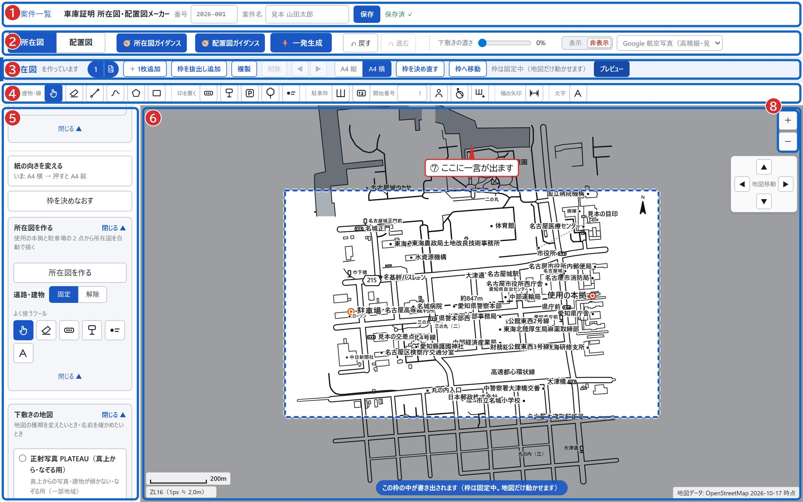
名前と役目
| 番号 | 名前 | 何をする所か | この手順書での呼び方 |
|---|---|---|---|
| ① | 上部バー（1 段目） | ［‹ 案件一覧］で一覧へ戻る・番号と案件名・［保存］と保存の状態 | 上部バー |
| ② | 上部バー（2 段目） | 図のタブ（所在図／配置図）・［🧭 所在図ガイダンス］［🧭 配置図ガイダンス］・［⚡ 一発生成］・［↶ 戻す］［↷ 進む］・下敷きの濃さ・［表示｜非表示］・下敷きの地図の選択 | 図のタブ／上部バー |
| ③ | 紙の帯 | いま作っている図と紙（1 枚目…）・［＋ 1枚追加］［枠を抜出し追加］［複製］［削除］・［A4 縦］［A4 横］・［枠を決定］・［プレビュー］ | 紙の帯 |
| ④ | 道具の行 | 選択・消しゴム・線・印・駐車枠・幅の矢印・文字などの道具（「0-4」の表） | 道具の行 |
| ⑤ | 左メニュー | ［マーカー設置］（住所の検索・印）・［所在図を作る］・［下敷きの地図］・［自動・取り込み］の折りたたみ（▼） | 左メニュー |
| ⑥ | 地図 | 下敷きの地図の上に図を描く所。破線の枠の中が紙に出ます | 地図 |
| ⑦ | 地図の上の一言 | 押した後の結果や、次にすることが数秒出ます | 地図の上の一言 |
| ⑧ | 拡大・縮小 | ［＋］で寄る・［−］で引く（マウスのホイールでも同じ） | ［＋］［−］ |
補足
- 画面が狭いと、ボタンが折り返したり左メニューが短くなったりします。デスクトップパソコンの大きな画面がおすすめです。
- 左メニューは上下にスクロールできます。
- 地図はドラッグで動かし、マウスのホイールで寄せたり引いたりします。
はじめの画面（案件フォルダを選ぶ）
やること初めて開いた時は、案件を保存するフォルダを選びます。選ぶと案件一覧が出ます。
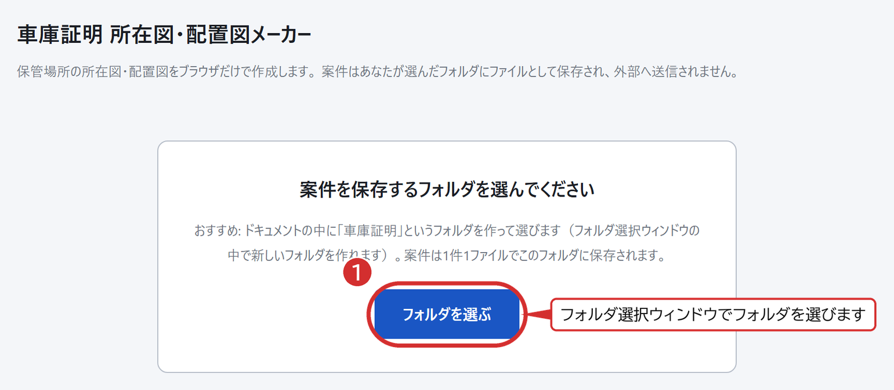
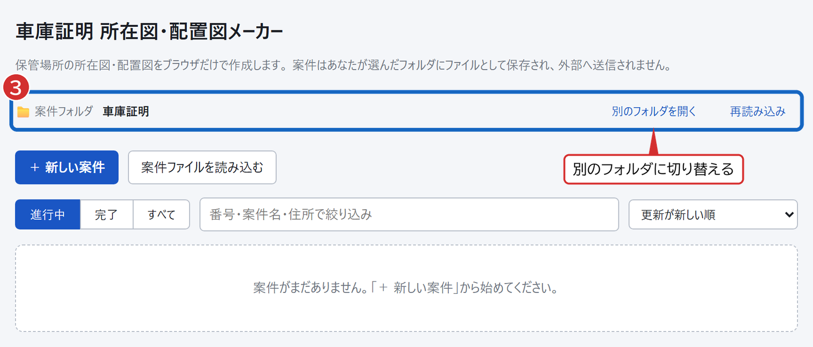
手順
- 1
「案件を保存するフォルダを選んでください」と出たら、［フォルダを選ぶ］を押します。
- 2
パソコンのフォルダ選択ウィンドウが開きます。おすすめは、ドキュメントの中に「車庫証明」というフォルダを作って選ぶことです（ウィンドウの中で新しいフォルダを作れます）。選んだらウィンドウの［フォルダーの選択］を押し、ブラウザに「このサイトにファイルの編集を許可しますか」と聞かれたら許可します。
- 3
案件一覧が出ます。上に「📁 案件フォルダ」と、選んだフォルダの名前が出ます。
できたか確かめる
- 案件一覧の上に「📁 案件フォルダ」とフォルダの名前が出ている
- ［＋ 新しい案件］のボタンが出ている
うまくいかない時
- 「このアプリは Chrome または Edge で開いてください」と出る
- Chrome か Edge で開き直してください（案件をフォルダにファイルで保存する機能を使うため、この 2 つが必要です）。
- 次に開いた時に「案件フォルダ「○○」を開く」と出る
- ［開く］を押すと、そのフォルダの案件が一覧に出ます。別のフォルダにする時は［別のフォルダを選ぶ］を押します。
- 違うフォルダを選んでしまった
- 案件一覧の上の［別のフォルダを開く］で選び直せます（前のフォルダの案件ファイルはそのまま残ります）。
- 一覧に出るはずの案件が出ない
- ［再読み込み］を押すと、フォルダの中の案件ファイルを読み直します（自動では見張っていません）。
補足
- 案件は 1 件 1 ファイル（拡張子 .shako）で、このフォルダに保存されます。PDF・PNG もこのフォルダに入ります（同じ名前のファイルは上書きされます）。
- 案件は外部へ送信されません。あなたのパソコンのフォルダにだけ保存されます。
- 他のパソコンから貰った案件ファイルは、［案件ファイルを読み込む］でこのフォルダに入れます。
- この手順書の画像では、フォルダの名前は「車庫証明」です。
新しい案件を作る
やること［＋ 新しい案件］で作図画面を開き、番号と案件名を入れます。
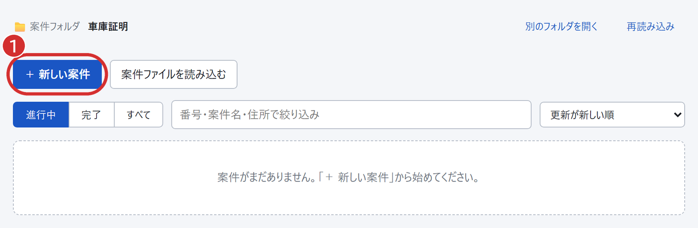
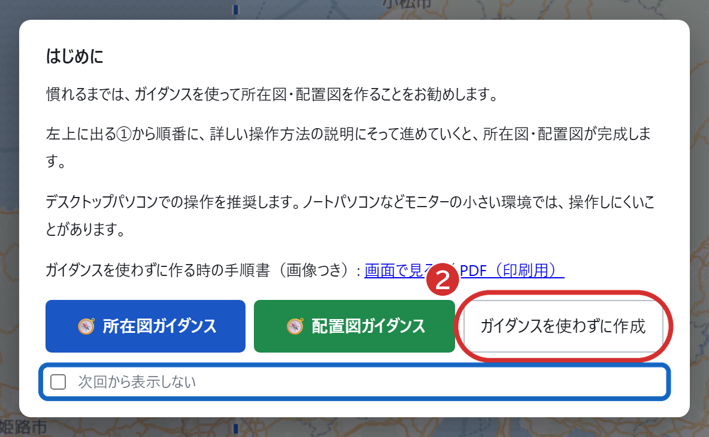
手順
- 1
案件一覧の［＋ 新しい案件］を押します。作図画面が開き、「はじめに」のウィンドウが出ます。
- 2
この手順書を見ながら作る時は、［ガイダンスを使わずに作成］を押します（ガイダンスを使う時は［🧭 所在図ガイダンス］か［🧭 配置図ガイダンス］を押します）。
- 3
上部バーの「番号」と「案件名」を入れます。番号は「2026-001」のように自動で入ります（事務所の番号に書き換えてもかまいません）。案件名は、依頼者の名前など一覧で見分けられる名前にします。
できたか確かめる
- 作図画面が開いた（左上に［‹ 案件一覧］、真ん中に地図）
- 番号と案件名が入っている
- ［保存］の右に「保存済 ✓」と出ている
うまくいかない時
- 番号の欄が赤くなり「同じ番号の案件があります」と出る
- 他の案件と番号が重なっています。番号を変えてください。
- 「はじめに」のウィンドウが出ない
- 「次回から表示しない」にチェックを入れた後は出ません。そのまま作り始めてかまいません。
- 番号を入れたくない
- 空欄でもかまいません（番号は PDF・画像のファイル名の先頭に付きます）。
補足
- 案件は自動で保存されます。［保存］を押すと、すぐに保存します。
- ガイダンスを使う時は、上部バーの［🧭 所在図ガイダンス］［🧭 配置図ガイダンス］を押します。左に案内の面が出て、この手順書と同じ番号で進めます。途中で閉じて、この手順書に切り替えることもできます。
- 「はじめに」のウィンドウの「次回から表示しない」にチェックを入れると、次からは出ません。
- 「はじめに」のウィンドウにあるとおり、デスクトップパソコンでの操作をおすすめします。
道具の行と左メニューの見方（1/2）
やること道具の行のボタンと、左メニューの折りたたみ（▼）の一覧です。ボタンにマウスを乗せると、同じ説明が出ます。
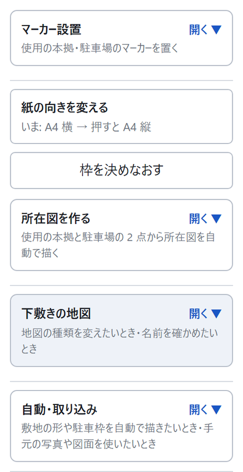
道具の行のボタン
| 絵 | 名前 | 何をするか |
|---|---|---|
| 選択（手のひら） | 文字や線を掴んで動かす・大きさを変える。迷ったらこれ | |
| 消しゴム | いらない文字・線をクリックして消す | |
| 直線 | 道路や境界を1本引く（クリック→クリック） | |
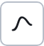 | 曲線 | 曲がった道路・川を引く（両端をクリック→ふくらみを決める） |
| 多角形 | 建物・敷地の形を囲う（クリックで角、Shift＋Enter かダブルクリックで閉じる） | |
| 四角（建物など） | ドラッグで四角を1つ描く（建物・囲いなど） | |
| 信号機 | 交差点に信号機の印を置く。交差点名も入れられる（空でもよい） | |
| バス停 | バス停の印を置く。停留所名も入れられる（空でもよい） | |
| P マーク | クリックした所に P マークを置く | |
| 木 | クリックした所に木の印を置く | |
| ●と名前 | クリックした所に●を置き、続けて名前を入れられます。名前を動かすと●から線が伸びます | |
 | 駐車枠 | 押してから置きたい場所を地図でクリック。まわりの＋で増やせます |
 | 番号 | 枠をなぞると通った順に連番が入る（Alt＋クリックで消去） |
 | 来客用 | 駐車枠をクリックすると枠の中に「来客用」が入る（もう一度で外れる） |
| 車いす | 駐車枠をクリックすると枠の中に車いすの印が入る（もう一度で外れる） | |
| 台数を指定して置く… | 台数・1枠の幅と奥行を数値で決めてまとめて置く | |
| 幅の矢印 | 自動で測るか、幅を入力して矢印を引きます | |
| 文字を置く | よく使う言葉と［自由入力］を選びます |
道具の行と左メニューの見方（2/2）
左メニューの折りたたみ（▼）
| 見出し | 名前 | どんな時に開くか |
|---|---|---|
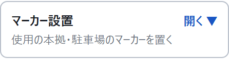 | マーカー設置 | 使用の本拠・駐車場のマーカーを置く |
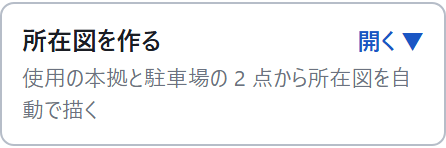 | 所在図を作る | 使用の本拠と駐車場の 2 点から所在図を自動で描く |
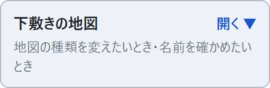 | 下敷きの地図 | 地図の種類を変えたいとき・名前を確かめたいとき |
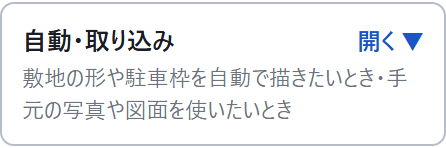 | 自動・取り込み | 敷地の形や駐車枠を自動で描きたいとき・手元の写真や図面を使いたいとき |
補足
- 道具を選ぶと、そのボタンに色が付きます。ふだんは［選択］（手のひらの絵）にしておきます。
- ▼の見出しを押すと開き、もう一度押すか、中の［閉じる ▲］で閉じます。所在図では［マーカー設置］がはじめから開いています。
- 配置図では、左メニューに配置図用の道具（多角形・駐車枠など）と［保管場所］が出ます（配置図の部で説明します）。
- 左メニューの［所在図を作る］の中の「よく使うツール」は、道具の行と同じ物です（どちらを押しても同じです）。
所在図を作る流れ
やること所在図は、下の②〜⑬の順に作ります。番号と順番は、ガイダンス（［🧭 所在図ガイダンス］）と同じです。
流れ（この順に進めます）
- 2使用の本拠の住所を検索する使用の本拠（車の所有者の住所）を検索して、地図にその場所の青いピンを立てます。
- 3地図の表示を変える任意使用の本拠の場所が分かりやすい地図（下敷き）に変えます（任意）。
- 4使用の本拠のマーカーを置く印の形を選び、地図の青いピンの場所をクリックして、使用の本拠のマーカー（◎）を置きます。
- 5駐車場の住所を検索する任意駐車場の住所を検索して、地図にその場所の橙色のピンを立てます（使用の本拠と同じ住所の時は要りません）。
- 6駐車場のマーカーを置く印の形を選び、地図の橙色のピンの場所をクリックして、駐車場のマーカー（◎）を置きます。
- 7所在図を自動で作る2 つの◎が入るように地図を合わせ、［所在図を作る］→［標準の設定で作る］で、道路・建物・名前を自動で描きます。
- 8文字や線の量を調整する任意設定盤で、項目ごとに描く量（なし／標準／多め／全部。名前の 8 項目は なし／標準／少なめ／多め／全部）を変えます。押すとその場で作り直されます（任意）。
- 9紙に出す範囲（枠）を決める破線の枠の中が所在図として紙に出ます。地図を動かして範囲を整え、［枠を決定］で決めます。
- 10文字の表示位置を調節する任意重なった文字や見づらい文字を、ドラッグで動かしたり消しゴムで消したりして整えます（任意）。
- 11印を置く任意信号機・バス停・P・木の印を地図に置きます。信号機とバス停は、続けて名前を入れられます（任意）。
- 12●と名前を置く任意目印にしたい場所に●を置き、名前を付けます。名前を●から離すと、●と名前をつなぐ線が引かれます（任意）。
- 13所在図をプレビューで確かめる紙に出る見た目（A4・この内容のまま出ます）で、所在図を確かめます。
この手順書の読み方（画像の印）
画像の印は 2 色です。赤＝あなたが押す物・動かす物、青＝押した後に出て来る物。
- 赤い〇ここを押します
- 番号札手順の①②と同じ番号です
- 矢印動かす向き。破線はドラッグ（押したまま動かす）
- 吹き出し画像の中の短い説明
- 青の囲み押した後に出て来る物・結果
- カーソルの絵矢印・◎の形（置く待ち）・手（ドラッグ）。画面の写真には写らないので描き足しています
補足
- 「任意」の動作は、必要な時だけ行います。要らなければ次の番号へ進んでください。
- 画面の名前（上部バー・紙の帯・道具の行・左メニューなど）は「準備 0-1」を見てください。
- この手順書の画像は、見本の案件（番号 2026-001・案件名「見本 山田太郎」・使用の本拠＝名古屋市中区三の丸三丁目1番1号・駐車場＝名古屋市中区三の丸一丁目）で撮っています。
- ガイダンスを使う時は、上部バーの［🧭 所在図ガイダンス］を押すと、左に同じ①〜⑬が 1 ページずつ出ます。
使用の本拠の住所を検索する
やること使用の本拠（車の所有者の住所）を検索して、地図にその場所の青いピンを立てます。
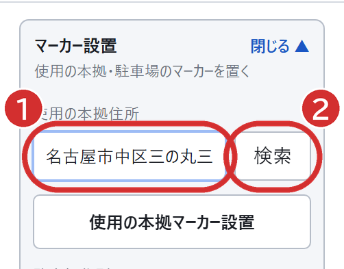
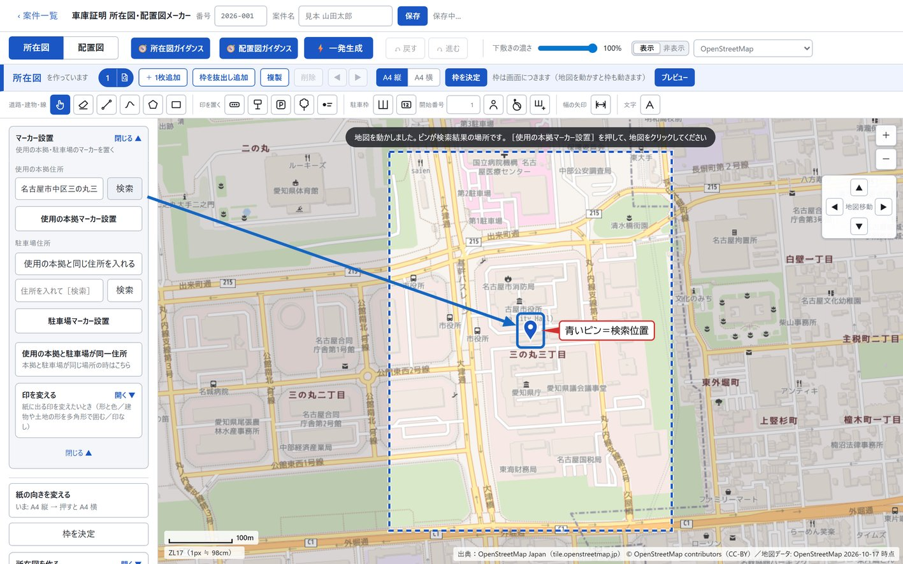
手順
- 1
左メニューの［マーカー設置］を開きます（所在図では、はじめから開いています）。「使用の本拠住所」の欄に、使用の本拠（車の所有者の住所）を入れます。番地まで入れると、ピンが正確な場所に立ちます。例: 名古屋市中区三の丸三丁目1番1号
- 2
欄の右の［検索］を押します。欄の中で Enter キーを押しても検索できます。地図が検索した住所の場所へ動き、そこに青いピンが立ちます。青いピンが検索位置です。
できたか確かめる
- 地図が、検索した住所のあたりへ動いた
- 地図の上に青いピンが立った（ピンの先が検索した住所の位置です）
- 地図の上に「地図を動かしました。ピンが検索結果の場所です。…」と出た（数秒で消えます）
うまくいかない時
- 「使用の本拠の住所が見つかりません」と出る
- 住所の書き方を変えてもう一度［検索］を押してください。「三丁目1番1号」を「3-1-1」にする、番地を外して「〇丁目」までにする、などで見つかることがあります。
- 「国土地理院の住所検索が応答しません」と出る
- インターネットにつながっているか確かめてください。つながらない時は、Google マップなどで場所を確かめて、地図を手で動かしてから④でマーカーを置けます。
- ピンが思っていた場所と少し違う
- ピンは目安です。マーカー（◎）は④で自分で置くので、正しい場所に置けば問題ありません。
- 欄が見当たらない
- 左メニューの［マーカー設置］が閉じています。見出しの［開く ▼］を押して開いてください。
補足
- 検索しただけでは、所在図の◎（マーカー）は置かれません。◎は④「使用の本拠のマーカーを置く」で置きます。
- 住所の検索は国土地理院の住所検索を使っています。インターネットにつながっている必要があります。
- 駐車場の住所も、同じやり方で「駐車場住所」の欄から検索します（⑤）。駐車場のピンは橙色です。
- 所在図ガイダンスの②と同じ動作です。ガイダンスでは左の面の欄から、この手順書では左メニューの欄から検索します（どちらに入れても同じ値です）。
地図の表示を変える（1/2）
やること使用の本拠の場所が分かりやすい地図（下敷き）に変えます（任意）。
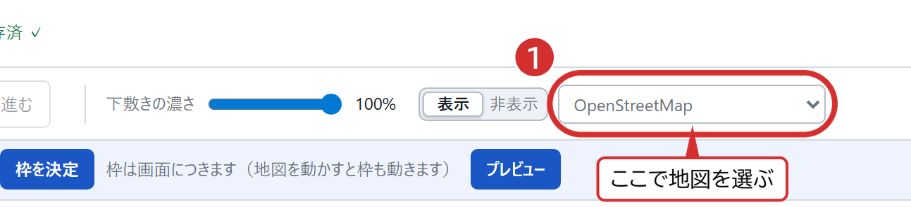
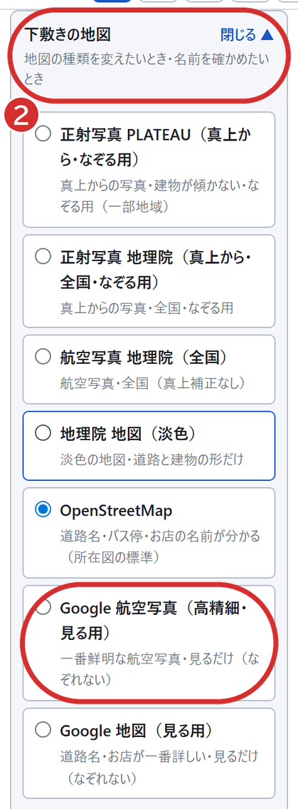
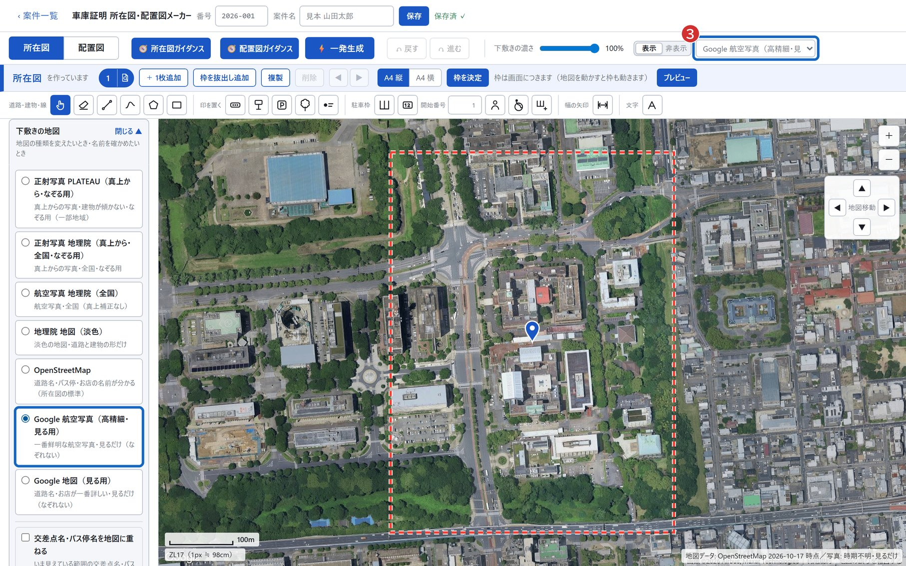
手順
- 1
上部バーの右の、下敷きの地図の選択（はじめは「OpenStreetMap」）を押して、一覧から地図を選びます。
- 2
または、左メニューの［下敷きの地図］の［開く ▼］を押し、出て来た〇の一覧から選びます。どちらで選んでも同じです。
- 3
地図がすぐに切り替わります。上部バーの選択の文字と、左メニューの〇が、選んだ地図になります。
できたか確かめる
- 地図の見た目が変わった（例: Google 航空写真なら写真になった）
- 上部バーの選択に、選んだ地図の名前が出ている
地図の表示を変える（2/2）
うまくいかない時
- Google の地図や写真が出ない・灰色のまま
- インターネットにつながっているか確かめてください。出ない時は「航空写真 地理院（全国）」など地理院の地図を選んでください。
- ［下敷きの地図］の中に〇が見当たらない
- ［下敷きの地図］が閉じています。見出しの［開く ▼］を押してください。
- 地図が薄い・見えない
- 上部バーの［下敷きの濃さ］が低いか、［表示｜非表示］が「非表示」になっています。濃さを 100% に、［表示］にしてください。
補足
- 道路名やバス停の名前を見るなら OpenStreetMap、お店や建物の名前を見るなら「Google 地図（見る用）」、建物の形や駐車場の位置を見るなら「Google 航空写真」が分かりやすいです。
- Google の地図と写真は見るだけです（なぞって図にすることはできません）。所在図は国土地理院と OpenStreetMap のデータから自動で描きます（⑦）。
- 下敷きの地図は紙には出ません。⑦の［標準の設定で作る］を押すと、地図は自動で「非表示」になります。
- この手順書では、ここで Google 航空写真に変えて④〜⑥を撮っています。
- 所在図ガイダンスの③と同じ動作です。ガイダンスでは左の面に〇の一覧が出ます。
使用の本拠のマーカーを置く（1/2）
やること印の形を選び、地図の青いピンの場所をクリックして、使用の本拠のマーカー（◎）を置きます。
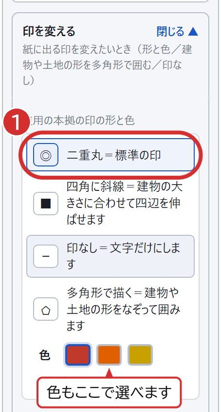
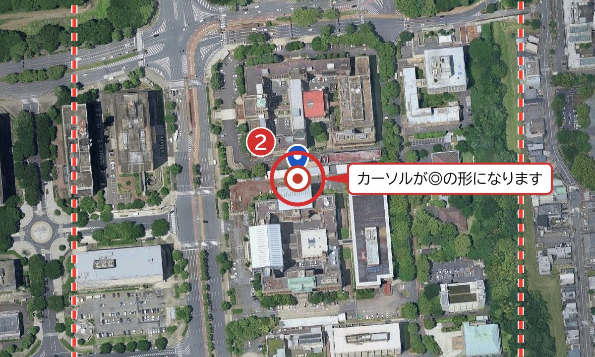
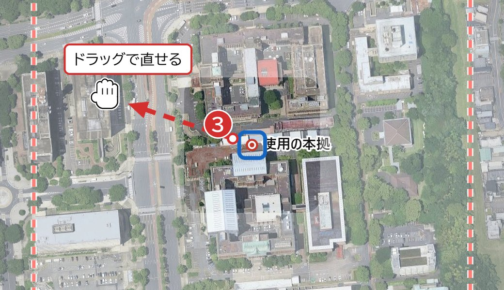
手順
- 1
左メニューの［マーカー設置］の中にある［印を変える］の［開く ▼］を押します。「使用の本拠の印の形と色」に、印の行が 4 つ（◎ 二重丸／■ 四角に斜線／ー 印なし／⬠ 多角形）と色が出ます。置きたい印の行を押します。標準は◎（二重丸・赤）です。
- 2
行を押すと、地図の上でカーソルが選んだ印の形（◎）になり、「地図上の使用の本拠地をクリックしてください」と出ます。地図の青いピンの場所（ピンの先）をクリックします。◎が置かれ、横に「使用の本拠」の文字が出ます。青いピンは消えます。
- 3
◎の場所がずれていれば、◎をドラッグ（押したまま動かす）して正しい場所へ動かします。文字も一緒に付いて来ます。
できたか確かめる
- 地図の青いピンがあった場所に、赤い◎がある
- ◎の横に「使用の本拠」の文字が出ている
- 青いピンが消えた
- 地図の上に「使用の本拠マーカーを置きました」と出た（数秒で消えます）
使用の本拠のマーカーを置く（2/2）
うまくいかない時
- 地図をクリックしても◎が出ない
- 行を押した後、地図の上でカーソルが◎の形になっているか確かめてください。なっていなければ、もう一度行を押してから地図をクリックします。
- 行を押してもカーソルが◎にならない
- もう◎を置いてある時は、行を押すと印の形が変わるだけです（置く待ちにはなりません）。場所を変えたい時は、◎をドラッグで動かしてください。
- 置く前にやめたい
- Esc キーを押すと「マーカーの設置をやめました」と出て、置く待ちが終わります。
- ◎ではなく文字だけ動いた
- 文字をつかむと文字だけが動きます。◎（丸の所）をつかんでドラッグしてください。
- ［印を変える］が見当たらない
- ［マーカー設置］が閉じています。［マーカー設置］の［開く ▼］を押すと、その中に［印を変える］が出ます。
補足
- 印の形を変えない時（◎のまま）は、［印を変える］を開かずに、［使用の本拠マーカー設置］を押してから地図をクリックしても置けます。
- ■（四角に斜線）は、建物の大きさに合わせて四辺を伸ばせます。ー（印なし）は、印を出さずに文字だけにします。
- ⬠（多角形）は、建物や土地の形をなぞって囲みます。角を順にクリックし、最後に Enter で閉じます。
- 色は［色］の 3 つ（赤／オレンジ／黄）から選べます。標準は赤です。
- 置いた後に別の印の行を押すと、置いた◎の形だけが変わります（場所はそのまま）。
- 所在図ガイダンスの④では、置いた後も地図の別の場所をクリックすると◎がそこへ移ります。この手順書（左メニュー）では、◎のドラッグで動かします。
駐車場の住所を検索する
やること駐車場の住所を検索して、地図にその場所の橙色のピンを立てます（使用の本拠と同じ住所の時は要りません）。
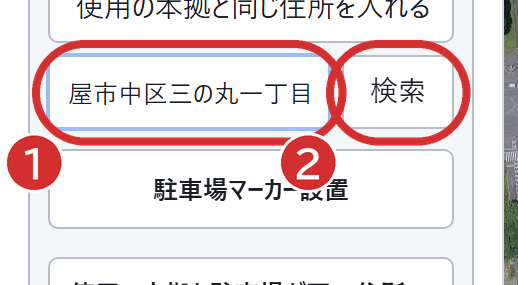
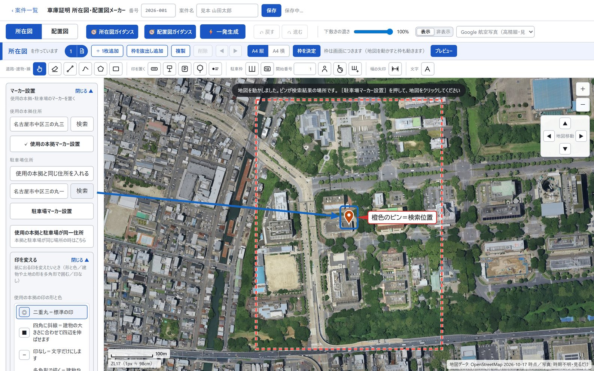
手順
- 1
左メニューの［マーカー設置］の「駐車場住所」の欄に、駐車場の住所を入れます。例: 名古屋市中区三の丸一丁目
- 2
欄の右の［検索］を押します（欄の中で Enter キーを押しても検索できます）。地図が駐車場の場所へ動き、そこに橙色のピンが立ちます。
できたか確かめる
- 地図が、駐車場のあたりへ動いた
- 橙色のピンが立った（使用の本拠のピンは青、駐車場のピンは橙色です）
うまくいかない時
- 「駐車場の住所が見つかりません」と出る
- 住所の書き方を変えてもう一度［検索］を押してください。駐車場に番地が無い時は、近くの番地や「〇丁目」で検索し、⑥で地図を見て正しい場所に置きます。
- 使用の本拠と同じ住所
- 検索は要りません。⑥の［使用の本拠と駐車場が同一住所］を使います。
- 地図が動いて、使用の本拠の◎が見えなくなった
- ◎は消えていません。地図をホイールで引くと見えます。⑦で 2 つの◎が入るように合わせます。
補足
- 検索しただけでは、駐車場の◎は置かれません。◎は⑥で置きます。
- 住所の検索は国土地理院の住所検索を使っています（インターネットが必要です）。
- 所在図ガイダンスの⑤と同じ動作です。
駐車場のマーカーを置く（1/2）
やること印の形を選び、地図の橙色のピンの場所をクリックして、駐車場のマーカー（◎）を置きます。
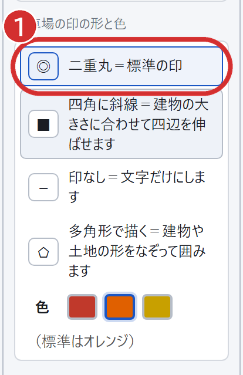
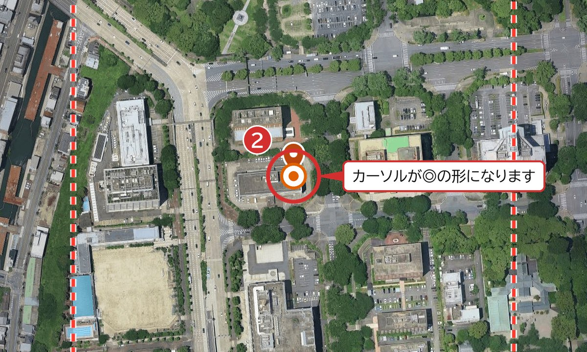
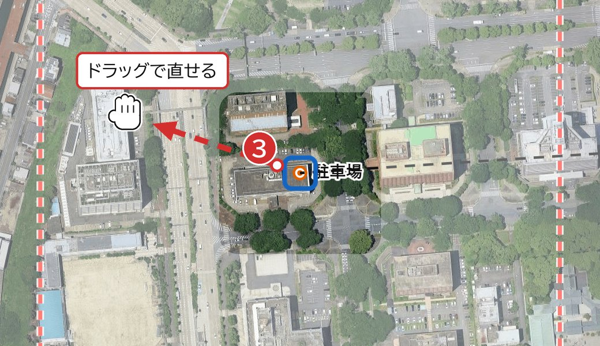
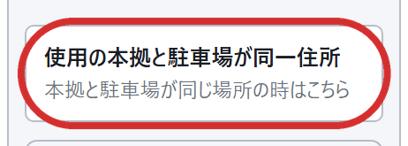
手順
- 1
左メニューの［印を変える］（④で開いた所）の「駐車場の印の形と色」で、置きたい印の行を押します。標準は◎（二重丸・オレンジ）です。
- 2
地図の上でカーソルが◎の形になり、「地図上の駐車場をクリックしてください」と出ます。地図の橙色のピンの場所（ピンの先）をクリックします。◎が置かれ、横に「駐車場」の文字が出ます。橙色のピンは消えます。
- 3
ずれていれば、◎をドラッグ（押したまま動かす）して正しい場所へ動かします。
できたか確かめる
- 橙色のピンがあった場所に、オレンジの◎がある
- ◎の横に「駐車場」の文字が出ている
- 地図の上に「駐車場マーカーを置きました」と出た（数秒で消えます）
駐車場のマーカーを置く（2/2）
うまくいかない時
- 地図をクリックしても◎が出ない
- 行を押した後、地図の上でカーソルが◎の形になっているか確かめてください。なっていなければ、もう一度行を押します。
- 行を押してもカーソルが◎にならない
- もう◎を置いてある時は、行を押すと印の形が変わるだけです。場所を変えたい時は、◎をドラッグで動かしてください。
- 置く前にやめたい
- Esc キーを押すと、置く待ちが終わります。
- 「駐車場の印の形と色」が無い
- 同一住所にしてある時は、印は 1 つなので「印の形と色」が 1 つだけ出ます（使用の本拠の設定が使われます）。
補足
- 使用の本拠と駐車場が同じ場所の時は、［マーカー設置］の［使用の本拠と駐車場が同一住所］を押してから、その場所をクリックします。1 回のクリックで 2 つが同じ場所に置かれ、紙には印が 1 つ、文字が 2 つ（使用の本拠・駐車場）出ます。
- 同一住所の時、印の形と色は「使用の本拠」の設定が使われます。
- 印の形を変えない時は、［駐車場マーカー設置］を押してから地図をクリックしても置けます。
- 所在図ガイダンスの⑥では、置いた後も地図の別の場所をクリックすると◎が移ります。この手順書（左メニュー）では、◎のドラッグで動かします。
所在図を自動で作る（1/2）
やること2 つの◎が入るように地図を合わせ、［所在図を作る］→［標準の設定で作る］で、道路・建物・名前を自動で描きます。
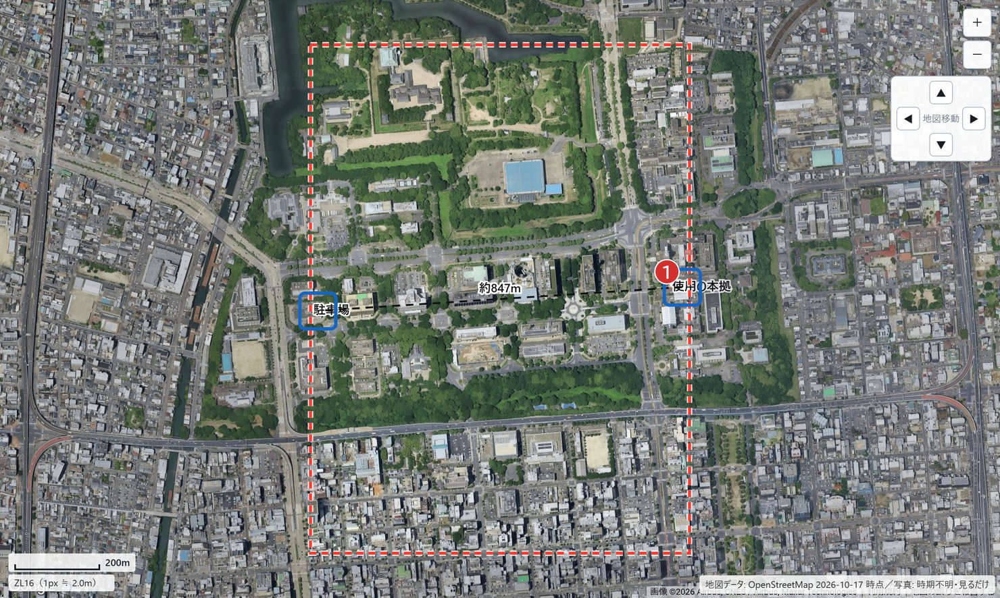
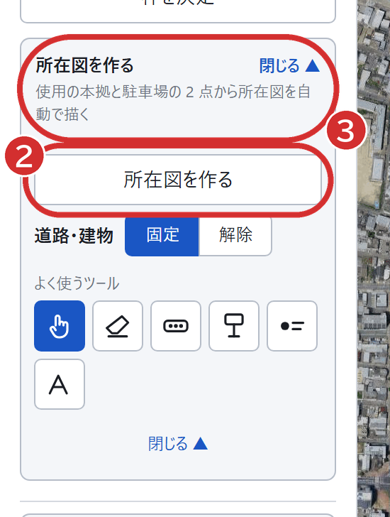
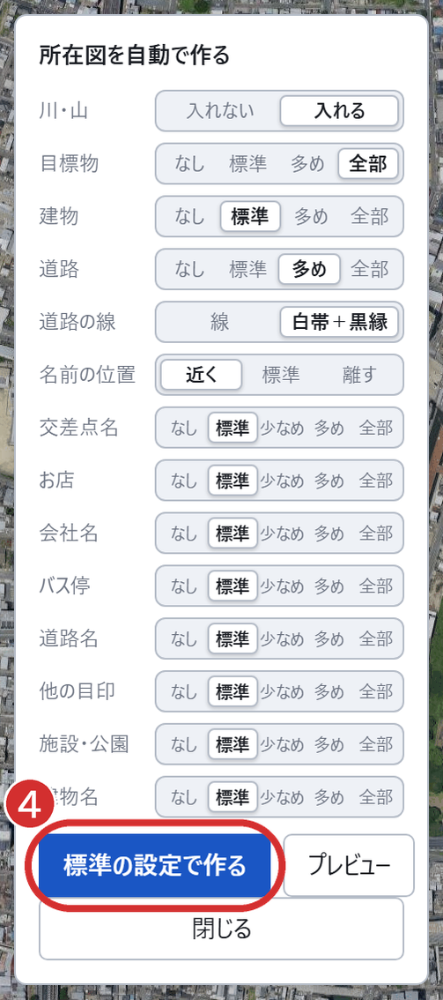
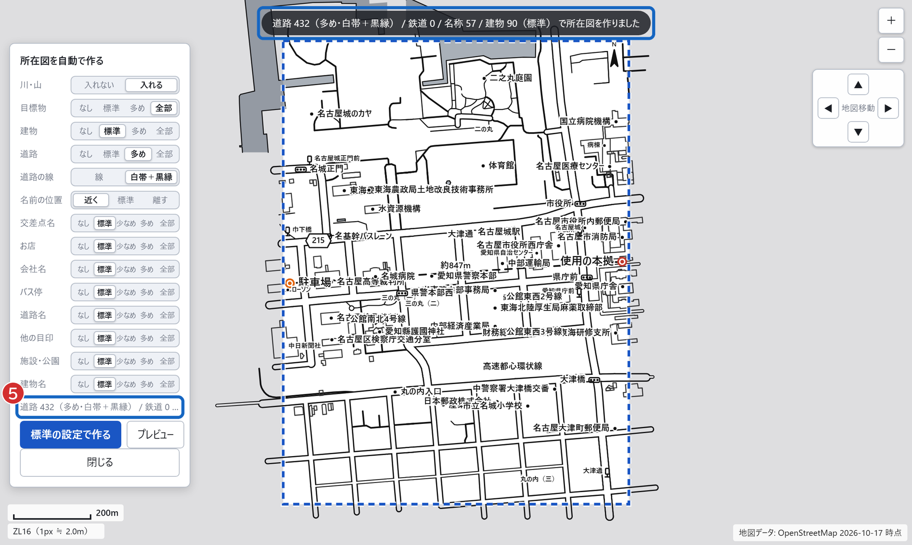
手順
- 1
使用の本拠と駐車場の 2 つの◎が、地図の破線の枠に入るように地図を動かします（ドラッグで動かす・ホイールで寄せる／引く）。描く範囲は「いま見えている破線の枠の中」です。
- 2
紙の向き（A4 縦・横）を紙の帯の［A4 縦］［A4 横］で決めます（2 つの◎が横に並ぶなら A4 横）。向きとズームで枠に入る範囲（＝紙に載る目印）が変わります。
- 3
左メニューの［所在図を作る］の［開く ▼］を押します。
- 4
中の［所在図を作る］を押します。地図の左に、設定盤「所在図を自動で作る」が開きます。
- 5
設定盤の下の［標準の設定で作る］を押します。下敷きの地図が消え、地図のデータから道路・建物・交差点名などが描かれます（数秒かかります）。
- 6
描き終わると、設定盤の下と地図の上に「道路 ○ / 鉄道 ○ / 名称 ○ / 建物 ○ で所在図を作りました」のように出ます。
所在図を自動で作る（2/2）
できたか確かめる
- 白地に、道路・建物・名前が描かれた
- 使用の本拠と駐車場の◎と文字が残っている
- 設定盤の下に、作った数が出ている
うまくいかない時
- 「先にマーカーを置いてください」と出る
- ④⑥で◎を置いてから押してください。
- 片方の◎のまわりが描かれない
- 描く範囲は破線の枠の中です。2 つの◎が枠に入るように地図を引いて（ホイールで縮小）、もう一度［標準の設定で作る］を押します。
- 何も描かれない・時間がかかる
- 地図のデータはインターネットから取ります。つながっているか確かめて、もう一度押してください。
- 自分で変えた設定が元に戻った
- ［標準の設定で作る］は、設定を全部「標準」に戻してから作ります。設定を変える時は、⑧のとおり設定盤の段を押すだけで作り直されます。
補足
- 道具メニュー（左メニュー）には、2 つの◎に地図を合わせるボタンはありません。地図はドラッグとホイールで合わせます（ガイダンスの⑦には［所在図を作る］1 つで合わせて描くボタンがあります）。
- 自動で描いた道路・建物は「固定」になっていて、動かしたり消したりできません（文字や印は動かせます）。線を直したい時は、［所在図を作る］の中の「道路・建物」を［解除］にします。
- 下敷きの地図をもう一度見たい時は、上部バーの［表示｜非表示］を［表示］にします（下敷きは紙には出ません）。
- ［所在図を作る］の中の「よく使うツール」（選択・消しゴム・信号機・バス停・●と名前・文字）は、道具の行と同じ物です。
- 所在図ガイダンスの⑦では、［所在図を作る］1 つで描けます。描き終わると「いま:」の欄に「道路 ○ / 鉄道 ○ / 名称 ○ を生成しました → ［次へ］で進みます」と出ます。出たら［次へ］を押してください。
- 所在図ガイダンスの⑦には［紙の向きを変える］とズームの行（［− ズームアウト（広く）］［＋ ズームイン（狭く）］）もあります。向きを変えると自動で作り直します。ズームを変えたら、もう一度［所在図を作る］を押してください。
- 目印（建物名・交差点名など）が少ない時は［ズームアウト］で枠を広げると増えます。多すぎる時は［ズームイン］で減ります。枠を決めた後（⑨）は、ズームのボタンは押せません（⑨［枠を決めなおす］で変えられます）。
文字や線の量を調整する（1/2）
やること設定盤で、項目ごとに描く量（なし／標準／多め／全部。名前の 8 項目は なし／標準／少なめ／多め／全部）を変えます。押すとその場で作り直されます（任意）。
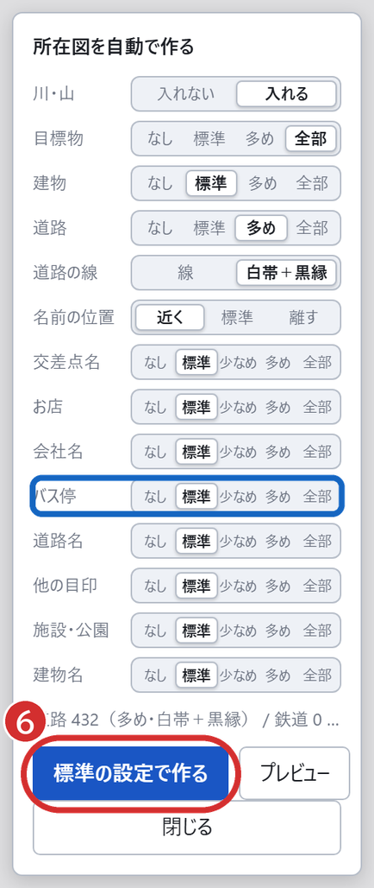
手順
- 1
［なし］を押すと、その項目を描きません。
- 2
［標準］を押すと、ちょうどよい量を描きます（多くの項目の最初の状態）。名前の 8 項目の標準は「おまかせ」で、枠の中の候補が 10 件以下なら全部、それより多ければ近い順に 3 件を描きます。
- 3
名前の 8 項目だけ［少なめ］があります。枠の中の候補のうち、使用の本拠・駐車場に近い順に約 3 分の 1 を描きます。
- 4
［多め］を押すと、標準より多く描きます。名前の 8 項目は、近い順に約 3 分の 2 を描きます。
- 5
［全部］を押すと、枠の中にある物を全部描きます。名前の 8 項目は 少なめ → 多め → 全部 の順に必ず増えます（標準は候補の数で決まる「おまかせ」なので、この並びの外です）。目標物・建物・道路は右へ行くほど必ず増えます。
- 6
どれかを押すと、その場で所在図が作り直されます。地図で文字の重なりや量を確かめ、ちょうどよい段を選びます。
- 7
全部を最初の状態に戻したい時は、設定盤の下の［標準の設定で作る］を押します。
できたか確かめる
- 押した段の色が変わった
- 地図の所在図が作り直され、その項目の量が変わった
文字や線の量を調整する（2/2）
うまくいかない時
- 押しても図が変わらない
- その項目が枠の中に無い時は、どの段でも同じです。名前の項目は、枠の中の候補が 1〜2 件だと多めと全部が同じに、10 件以下だと標準と全部が同じになります。設定盤の下の数で確かめてください。
- 文字が重なって読みにくい
- その項目を［標準］か［なし］にするか、⑩で文字を動かします。
- 設定盤が見当たらない
- 左メニューの［所在図を作る］の中の［所在図を作る］を押すと開きます（もう一度押すか、［閉じる］で閉じます）。
補足
- 項目は 14 あります（川・山／目標物／建物／道路／道路の線／名前の位置／交差点名／お店／会社名／バス停／道路名／他の目印／施設・公園／建物名）。
- 川・山と道路の線は 2 択（入れない｜入れる・線｜白帯＋黒縁）、名前の位置は 3 択（近く／標準／離す）です。
- 最初の状態は、目標物が「全部」、道路が「多め」、名前の項目が「標準」です。
- 名前の 8 項目（交差点名〜建物名）は 5 区分です。標準＝枠の中の候補が 10 件以下なら全部・それより多ければ近い順に 3 件／少なめ＝近い順に約 3 分の 1／多め＝約 3 分の 2／全部＝全部（例: 全部が 3 件なら 少なめ 1・多め 2、全部が 1 件なら 少なめ 0・多め 1）。目標物・建物・道路は 4 区分（なし／標準／多め／全部）です。主役のすぐ近くの交差点名・道路名は、［なし］以外ならどの段でも必ず出ます。
- 設定は案件に覚えられます（開き直しても同じ図が出ます）。
- 所在図ガイダンスの⑧と同じ設定盤です（ガイダンスでは左の面に出ます）。
紙に出す範囲（枠）を決める
やること破線の枠の中が所在図として紙に出ます。地図を動かして範囲を整え、［枠を決定］で決めます。
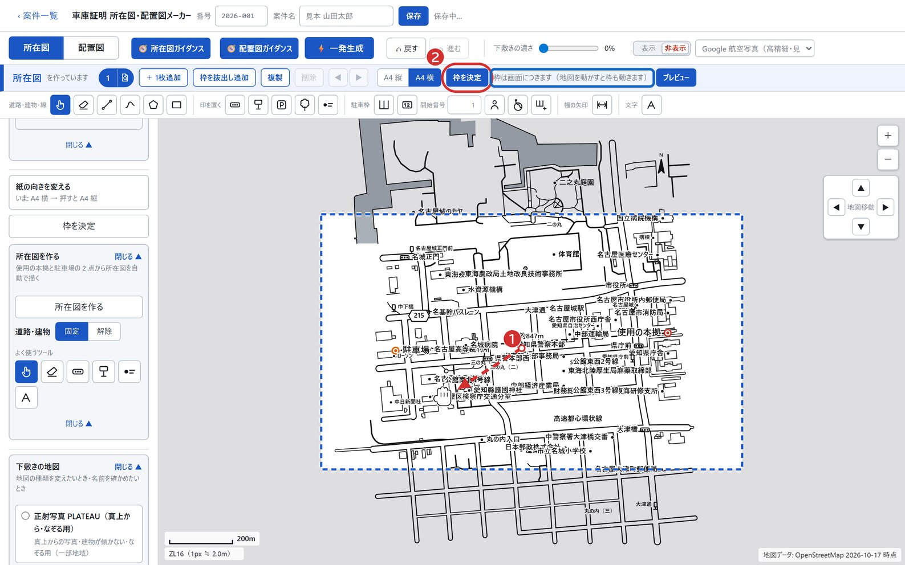
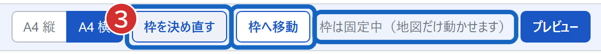
手順
- 1
地図をドラッグで動かし、ホイールで寄せたり引いたりして、2 つの◎と道順が分かる範囲が破線の枠に入るようにします。決める前は、地図を動かすと枠も一緒に動きます（紙の帯に「枠は画面につきます」と出ています）。
- 2
紙の帯の［枠を決定］を押します。地図の上に「この場所・この縮尺で枠を決めました。…」と出ます。
- 3
決めた後は、地図を動かしても枠は動きません（地図だけ動かして中を仕上げられます）。ボタンは［枠を決め直す］に変わり、枠の所へ戻る［枠へ移動］が出ます。
できたか確かめる
- 紙の帯のボタンが［枠を決め直す］になった
- 紙の帯に「枠は固定中（地図だけ動かせます）」と出ている
- 地図を動かしても、破線の枠が動かない
うまくいかない時
- 枠を決めたのに、地図と一緒に枠が動く
- まだ決まっていません。紙の帯の［枠を決定］を押してください（決めると「枠は固定中」と出ます）。
- 範囲を変えたい
- ［枠を決め直す］を押すと、枠がまた画面につきます。地図を合わせてから、もう一度［枠を決定］を押します。
- 枠が見えなくなった
- ［枠へ移動］を押すと、決めた枠が画面に入る所へ地図が戻ります。
- 範囲を広げたら、外側に道路が描かれていない
- 自動で描くのは、描いた時の枠の中です。範囲を変えた後は、⑦の［標準の設定で作る］（または⑧の段）で作り直してください。
補足
- 縮尺は、枠を決めた時の地図の大きさで決まります。プレビュー（⑬）で「1:○○」と確かめられます。
- 所在図ガイダンスの⑨と同じ動作です。ガイダンスには［2つのマーカーが入るように地図を動かす］もあります。
文字の表示位置を調節する（1/2）
やること重なった文字や見づらい文字を、ドラッグで動かしたり消しゴムで消したりして整えます（任意）。
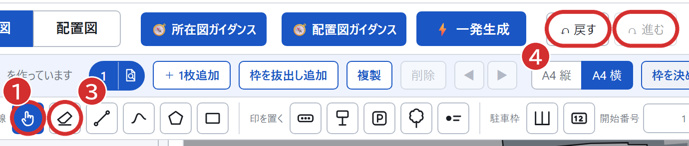
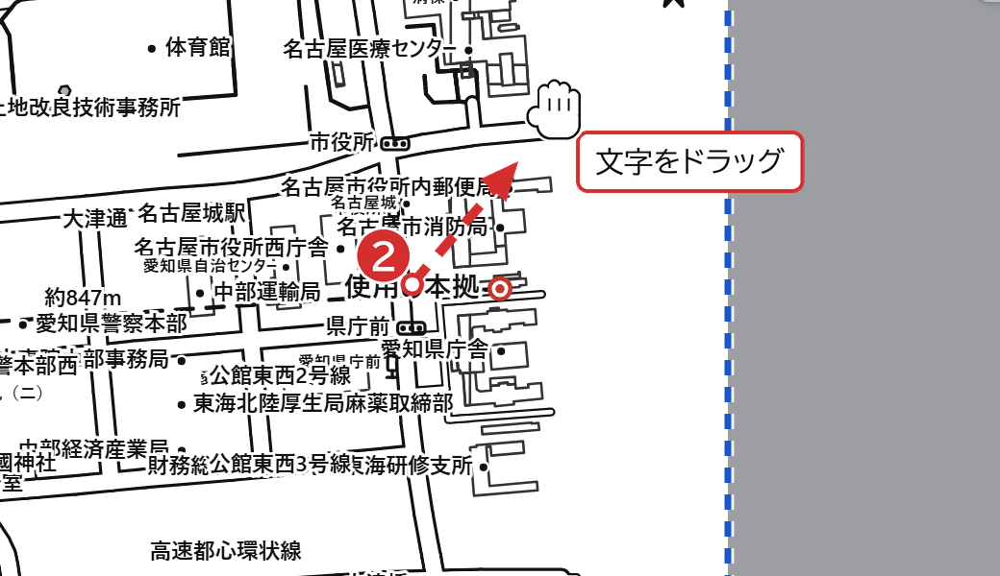
手順
- 1
道具の行の［選択］（手のひらの絵）を押します。ふだんはこの道具になっています。
- 2
動かしたい文字を、押したまま動かします（ドラッグ）。文字を押すと選ばれ、右下のつまみで大きさも変えられます。
- 3
いらない文字は、［消しゴム］を押してから、その文字をクリックすると消えます。
- 4
間違えた時は、上部バーの［↶ 戻す］で 1 つ前に戻ります（Ctrl＋Z）。戻しすぎたら［↷ 進む］（Ctrl＋Shift＋Z）で進めます。
- 5
面の一番下の「道路・建物」［固定｜解除］で、道路や建物の線も動かせるようにできます（作り直すと固定に戻ります）。
できたか確かめる
- 文字が重ならず、読みやすい位置にある
- いらない文字が消えている
うまくいかない時
- 道路や建物の線が動かない・消せない
- 自動で描いた道路・建物は「固定」です。直したい時は、左メニューの［所在図を作る］の中の「道路・建物」を［解除］にします。
- 消しゴムのまま文字をドラッグして消してしまった
- ［↶ 戻す］で戻し、［選択］に持ち替えてから動かします。
- ⑧で段を変えたら、動かした文字が元に戻った
- 段を変えると所在図が作り直されます。文字の位置の調節は、段を決めてから最後に行ってください。
文字の表示位置を調節する（2/2）
補足
- 文字を選ぶと、右に「選択中の図形」が出て、細かく直せます。
- 所在図ガイダンスの⑩と同じ道具です。
印を置く（1/2）
やること信号機・バス停・P・木の印を地図に置きます。信号機とバス停は、続けて名前を入れられます（任意）。
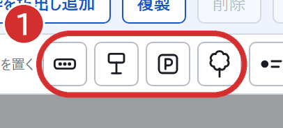
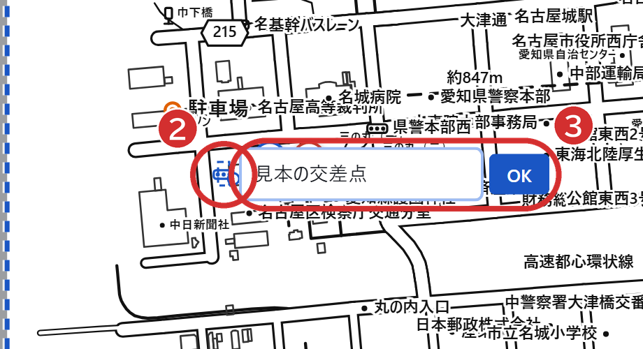
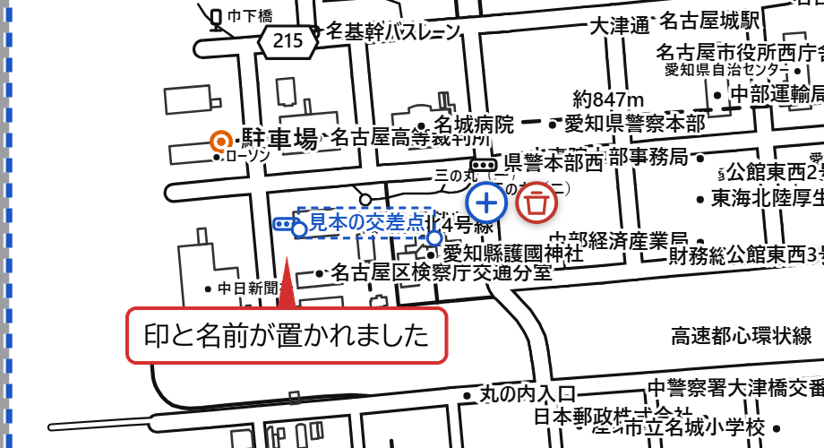
手順
- 1
道具の行の「印を置く」から、置きたい印（信号機・バス停・P マーク・木）を押します。
- 2
地図の置きたい場所をクリックします。その場所に印が置かれます。
- 3
信号機とバス停は、名前を入れる欄が出ます。交差点名・停留所名を入れて Enter（または［OK］）を押します。空のままでもかまいません（Esc で取り消し）。
- 4
面の一番下の「道路・建物」［固定｜解除］で、道路や建物の線も動かせるようにできます（作り直すと固定に戻ります）。
できたか確かめる
- 地図の、クリックした場所に印が置かれた
- 信号機・バス停は、印の横に名前が出た
うまくいかない時
- クリックしても印が置かれない
- 道具の行の印のボタンを押してから（押した印に色が付きます）、地図をクリックしてください。
- 間違えた所に置いた
- ［選択］に持ち替えて印をドラッグで動かすか、［消しゴム］で消します（［↶ 戻す］でも戻せます）。
印を置く（2/2）
補足
- 1 つ置くと道具は［選択］に戻ります。続けて置く時は、もう一度印のボタンを押します。
- P マークと木は、名前の欄は出ません。
- 自動で描いた交差点名・バス停名も同じ印です。⑩と同じように動かしたり消したりできます。
- 所在図ガイダンスの⑪と同じ道具です。
●と名前を置く（1/2）
やること目印にしたい場所に●を置き、名前を付けます。名前を●から離すと、●と名前をつなぐ線が引かれます（任意）。
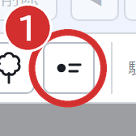
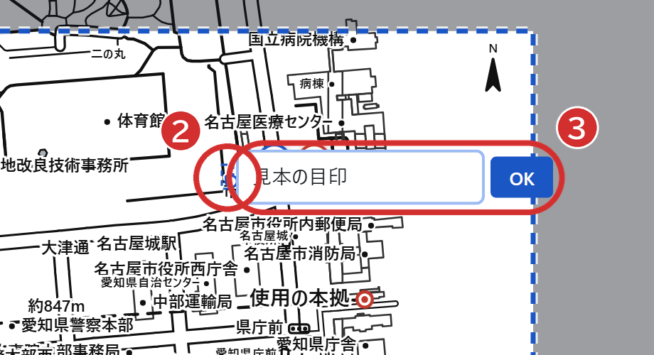
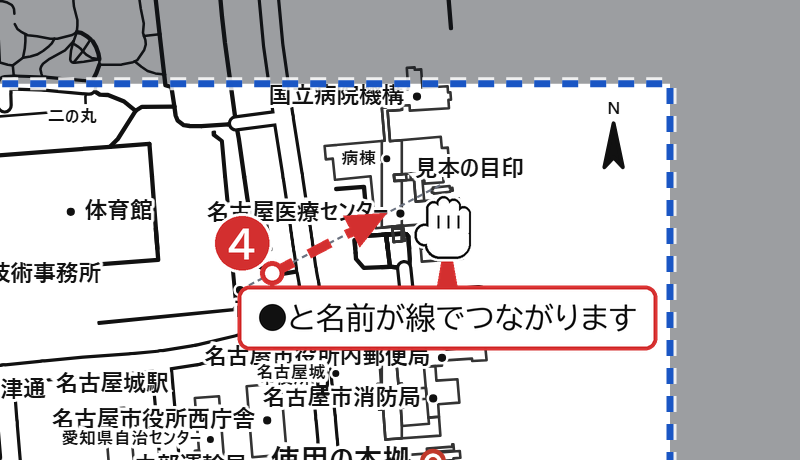
手順
- 1
道具の行の［●と名前］を押します。
- 2
地図の、目印にしたい場所をクリックします。●が置かれ、名前を入れる欄が出ます。
- 3
名前を入れて Enter（または［OK］）を押します。
- 4
名前をドラッグで●から離すと、●と名前をつなぐ線が引かれます。
- 5
面の一番下の「道路・建物」［固定｜解除］で、道路や建物の線も動かせるようにできます（作り直すと固定に戻ります）。
できたか確かめる
- 地図に●と名前が出た
- 名前を離した時、●と名前が線でつながった
うまくいかない時
- 線が出ない
- 名前が●のすぐ近くにある時は、線は出ません。もう少し離してください。
- ●の場所を変えたい
- ［↶ 戻す］で戻して置き直すか、［消しゴム］で消してから、もう一度置きます。
- 名前の欄が出ない
- 道具の行の［●と名前］を押してから、地図をクリックしたか確かめてください。
●と名前を置く（2/2）
補足
- 左メニューの［所在図を作る］の中の「よく使うツール」にも［●と名前］があります（同じ物です）。
- 所在図ガイダンスの⑫と同じ道具です。
所在図をプレビューで確かめる（1/2）
やること紙に出る見た目（A4・この内容のまま出ます）で、所在図を確かめます。
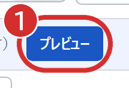
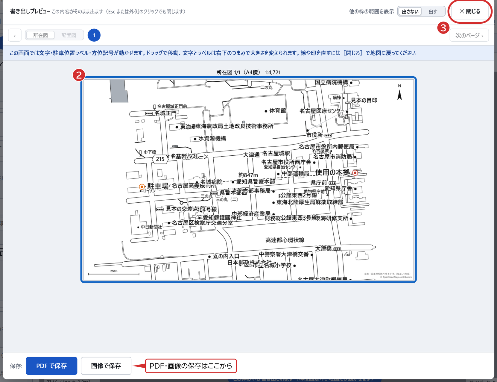
手順
- 1
紙の帯の右の［プレビュー］を押します。
- 2
「書き出しプレビュー」が開き、紙に出るとおりの所在図が出ます。文字の重なり・2 つの◎・縮尺（1:○○）を確かめます。この画面でも、文字はドラッグで動かせます。
- 3
直す所がある時は、右上の［✕ 閉じる］（または Esc）で地図に戻り、⑩〜⑫で直します。
できたか確かめる
- 紙の中に、2 つの◎と「使用の本拠」「駐車場」の文字が入っている
- 文字が重なっていない
- 紙の上に「所在図 1/1（A4横）1:○○」のように紙の向きと縮尺が出ている
うまくいかない時
- 「書き出せる図がありません。先に図を作ってください。」と出る
- ⑦で所在図を作ってから押してください。
- 紙の外に◎がはみ出している
- 閉じて、⑨で枠を決め直します。
- 文字が重なっている
- この画面で文字をドラッグして直すか、閉じて⑩で直します。
所在図をプレビューで確かめる（2/2）
補足
- 右上の「他の枠の範囲を表示」を［出す］にすると、他の紙の枠の範囲が重ねて見られます。
- 上の［所在図］［配置図］で、配置図の紙も見られます（配置図を作った後）。
- 所在図ガイダンスの⑬では、下部の［‹ 戻る］の右の［所在図プレビュー］から開きます（同じ画面です）。文字が重なっていれば、プレビュー画面でテキストの移動ができます。
- PDF・画像にする時は、プレビューの帯の「保存:」の［PDF で保存］［画像で保存］を押します。出す紙を選ぶウィンドウが開きます（くわしくは「仕上げ」の部）。所在図と配置図は、配置図を作った後に 2 枚まとめて出せます。
- 続けて配置図を作る時は、ガイダンスから開いたプレビューなら下部の［配置図ガイダンスへ進む］、そうでなければ上部バーの図のタブ［配置図］を押します（「配置図 ①」へ）。案件は自動で保存されます。
配置図を作る流れ
やること配置図は、下の②〜⑰の順に作ります。番号と順番は、［🧭 配置図ガイダンス］と同じです。
流れ（この順に進めます）
- 2下敷きの写真を選ぶ下敷きとして地図が選択できます。「地理院 写真」が標準です（なぞって描いてよい写真です）。古い・ずれている時は「地理院 正射写真」や PLATEAU を試してください。Google の写真は見る用です。
- 3紙の向きを決める配置図を出す紙の向き（A4 縦・A4 横）を、駐車場の形に合わせて決めます。
- 4紙に出す範囲（枠）を決める駐車場の全体と前面道路が赤い破線の枠に入るように地図を合わせ、［枠を決定］で決めます。
- 5土地の輪郭を描く［多角形］で駐車場の敷地の角を順にクリックし、最後に Shift＋Enter で閉じて、土地の輪郭を描きます。
- 6建物や構造物を描く任意敷地の中に建物・植え込み・塀などがあれば、［四角（建物など）］などで描きます（任意）。
- 7駐車枠を置く［駐車枠］で枠を 1 つ置き、まわりの＋で増やして、駐車場の枠を並べます。
- 8枠に番号を付ける任意開始番号を入れて［番号］を押し、枠を順にクリック、もしくはドラッグ（連続で番号付け）して番号を付けます（任意）。
- 9来客用・車いすの枠任意来客用や車いす用の枠があれば、［来客用］［車いす］を押してから枠をクリックします（任意）。
- 10前面道路を描く自動描画の「道路」を［あり］にして、枠のまわりの道路の縁を線で入れます。
- 11道路の幅の矢印を引く幅の決め方を選び、［幅矢印］で道路の端から端まで矢印を引きます。
- 12出入口の幅の矢印を引く同じように［幅矢印］で、出入口の端から端まで矢印を引きます。
- 13道路・出入口の文字を置く道具の行の［A］から［道路］［出入口］などの言葉を選び、置きたい場所をクリックします。
- 14保管場所の枠に印を付ける［保管場所マーク］を押してから、借りる枠（申請する枠）をクリックして太い枠にします。
- 15保管場所ラベルを置く長さ・幅などを入れて［保管場所ラベル配置］を押します。⑭で保管場所マークを付けた枠があれば、その枠にそのままラベルが置かれます（無ければ、押した後に保管場所の枠をクリックします）。
- 16配置図をプレビューで確かめる紙に出る見た目で、配置図を確かめます。
- 17PDF にして保存するプレビューの［PDF］で出す紙を選び、PDF にして保存します。
補足
- 配置図は、駐車場の土地の形・駐車枠・前面道路・出入口を描く図です。下敷きに航空写真を使い、なぞって描きます。
- 下敷きの標準は「航空写真 地理院（全国）」（なぞって描いてよい写真）です。Google の写真は見て確かめるだけで、なぞることはできません。
- 「任意」の動作は、必要な時だけ行います。要らなければ次の番号へ進んでください。
- 画像の印の読み方は「所在図 ①」の凡例と同じです。
- この手順書の画像は、所在図と同じ見本の案件で、駐車場（名古屋市中区三の丸一丁目）のまわりを描いて撮っています。駐車場の形・枠の数は説明用の見本です。
- 所在図⑬のプレビューの［配置図ガイダンスへ進む］で来た時だけ、配置図ガイダンス①の下部に［‹ 所在図⑬へ戻る］が出ます（上部バーから開いた時は出ません）。
下敷きの写真を選ぶ
やること下敷きとして地図が選択できます。「地理院 写真」が標準です（なぞって描いてよい写真です）。古い・ずれている時は「地理院 正射写真」や PLATEAU を試してください。Google の写真は見る用です。
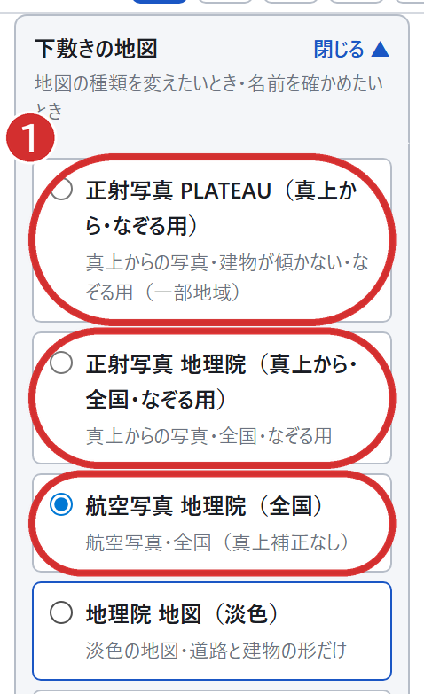
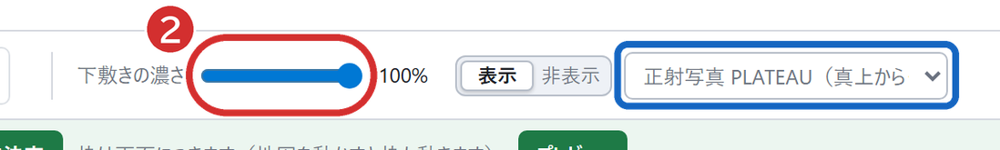
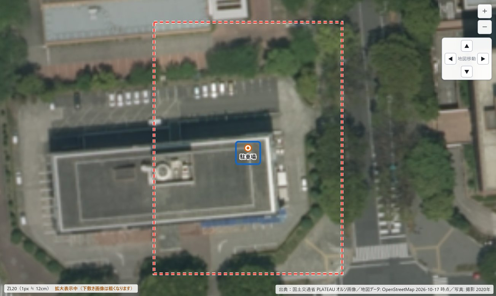
手順
- 1
左メニューの［下敷きの地図］の［開く ▼］を押し、写真の〇を選びます。標準は「航空写真 地理院（全国）」です。古い・ずれている時は「正射写真 地理院」や「正射写真 PLATEAU」を試します。
- 2
写真が濃くて自分の線が見づらい時は、上部バーの［下敷きの濃さ］のつまみを左へ動かして薄くします。
- 3
地図がすぐに選んだ写真に変わります。
できたか確かめる
- 地図が選んだ写真になった
- 上部バーの選択に、選んだ写真の名前が出ている
うまくいかない時
- PLATEAU を選んだら写真が出ない
- PLATEAU は一部の地域だけです。出ない時は「正射写真 地理院」か「航空写真 地理院（全国）」を選びます。
- 写真が真っ白・見えない
- ［下敷きの濃さ］が 0% か、［表示｜非表示］が「非表示」になっています。濃さを上げ、［表示］にします。
- Google の写真を選んだら、なぞって描けないと言われた
- Google の写真は見て確かめるだけです。なぞって描く時は地理院か PLATEAU の写真にします。
補足
- 「正射写真」は真上から写した写真で、建物が傾かないので土地の形をなぞりやすいです。
- 写真の撮影時期は、地図の右下に出ます（例: 写真: 撮影 2020年）。
- 下敷きの写真は紙には出ません（紙には描いた線と文字だけが出ます）。
- 所在図ガイダンスと同じく、配置図ガイダンスの②でも同じ一覧が出ます。
- 配置図ガイダンス②の一覧では、Google の行の「Google の規約」がリンクになっています。押すと Google マップ／Google Earth 追加利用規約のページが新しいタブで開きます（下敷きは変わりません）。
紙の向きを決める
やること配置図を出す紙の向き（A4 縦・A4 横）を、駐車場の形に合わせて決めます。
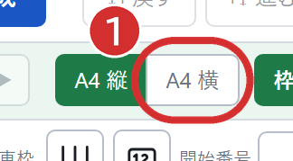
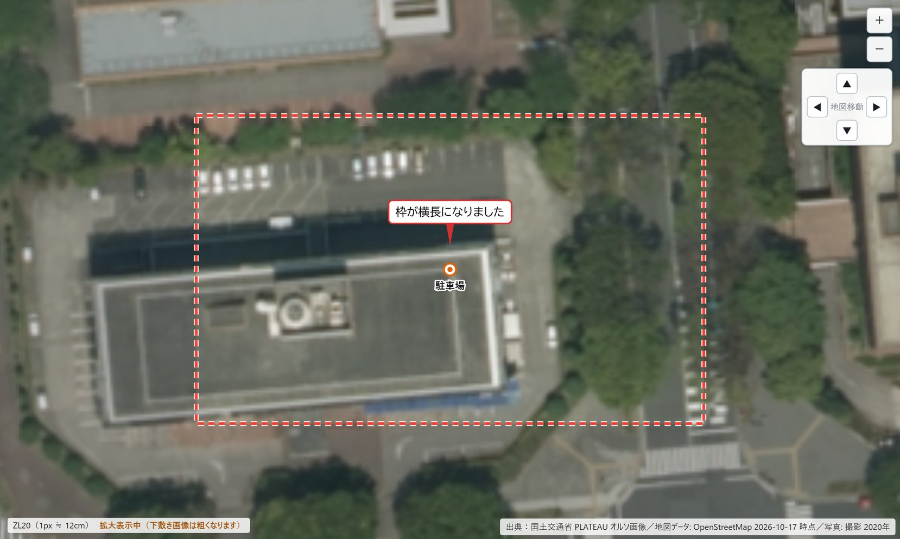
手順
- 1
紙の帯の［A4 縦］か［A4 横］を押します。駐車場が横に長ければ A4 横、縦に長ければ A4 縦が見やすいです。押すと、地図の破線の枠がその向きの形に変わります。
- 2
配置図ガイダンスの③では、ズームの行（［− ズームアウト（広く）］［＋ ズームイン（狭く）］）で枠の広さも調節できます。駐車場が小さく見える時は［ズームイン］、全体が入らない時は［ズームアウト］（地図の［＋］［−］と同じ刻み）。
できたか確かめる
- 押した方のボタンの色が変わった
- 地図の破線の枠が、選んだ向きの形になった
うまくいかない時
- 枠に駐車場が入りきらない
- 地図をホイールで引くと、枠に入る範囲が広がります。範囲は④で決めます。
- 後から向きを変えたい
- 後から変えられます。変えた後は、④で枠を確かめてください。
補足
- 向きは紙ごとに決めます（所在図の紙とは別です）。
- 写真の下敷きでは、枠の破線は赤く出ます。
- 配置図ガイダンスの③では［紙の向きを変える］1 つのボタンで縦と横が入れ替わります。
紙に出す範囲（枠）を決める
やること駐車場の全体と前面道路が赤い破線の枠に入るように地図を合わせ、［枠を決定］で決めます。
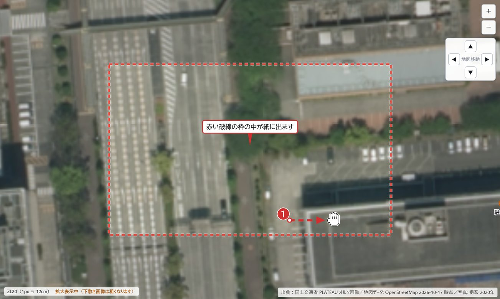
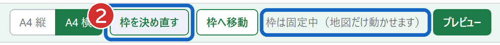
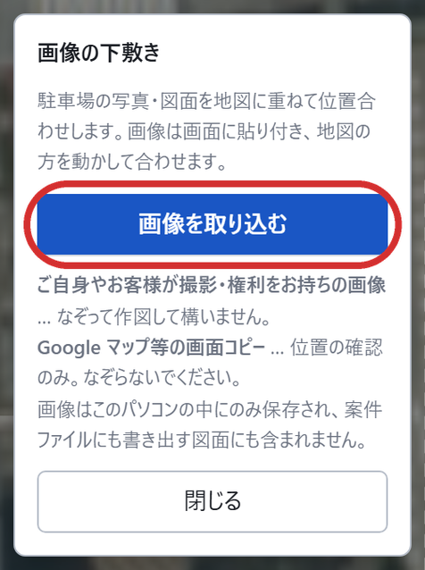
手順
- 1
地図をドラッグで動かし、ホイールで寄せたり引いたりして、駐車場の全体と前面道路が赤い破線の枠に入るようにします。決める前は、地図を動かすと枠も一緒に動きます。
- 2
紙の帯の［枠を決定］を押します。決めた後は地図を動かしても枠は動かず、ボタンは［枠を決め直す］になります。
できたか確かめる
- 紙の帯のボタンが［枠を決め直す］になった
- 紙の帯に「枠は固定中（地図だけ動かせます）」と出ている
うまくいかない時
- 枠を決めたのに、地図と一緒に枠が動く
- まだ決まっていません。紙の帯の［枠を決定］を押してください。
- 範囲を変えたい
- ［枠を決め直す］を押して合わせ直し、もう一度［枠を決定］を押します。
- 枠が見えなくなった
- ［枠へ移動］を押すと、決めた枠の所へ地図が戻ります。
補足
- お手元の写真や図面を下敷きにする時は、左メニューの［自動・取り込み］の［画像を重ねる］を押し、［画像を取り込む］で画像を選びます（パソコンのファイル選択ウィンドウが開きます・任意）。
- 取り込んだ画像はこのパソコンの中だけに保存され、案件ファイルにも紙にも入りません。
土地の輪郭を描く（1/2）
やること［多角形］で駐車場の敷地の角を順にクリックし、最後に Shift＋Enter で閉じて、土地の輪郭を描きます。
手順
- 1
左メニューの「多角形ツールで 土地の輪郭を描きます。」の下の［多角形］を押します。
- 2
地図の写真を見ながら、駐車場の敷地の角を 1 つずつ順にクリックします（時計回りでも反時計回りでもかまいません）。地図の下に「クリック＝頂点／Enter＝確定（閉じません）／Shift+Enter＝閉じて確定／Backspace＝1点戻す」と出ます。
- 3
最後の角までクリックしたら、Shift＋Enter を押します。最初の角と最後の角が線でつながり、輪郭が閉じて確定します（Enter だけだと最後の辺が引かれず、開いたままになります）。
- 4
間違えた角は、描いている途中なら Backspace で 1 点ずつ戻せます。確定した後は［↶ 戻す］で戻すか、角をドラッグで動かします。
- 5
面の一番下の「下敷きの濃さ」で下敷きを薄くすると、線が見えやすくなります。
できたか確かめる
- 敷地のまわりが線で囲まれた（最初と最後の角がつながっている）
- 地図の上に「線の上で Alt＋クリック＝頂点を足す／頂点の上で Alt＋クリック＝消す」と出た
土地の輪郭を描く（2/2）
うまくいかない時
- 最後の辺が引かれない（コの字になった）
- Enter だけで確定すると閉じません。［↶ 戻す］で戻して描き直し、最後に Shift＋Enter を押します。
- クリックしても点が打てない
- ［多角形］が選ばれているか（ボタンに色が付いているか）確かめてください。
- 角の位置がずれた
- 確定した後、［選択］で輪郭を押し、角をドラッグで動かします。線の上で Alt＋クリックすると角を足せます。
補足
- 最後の角の所でダブルクリックしても閉じて確定します（Shift＋Enter と同じ）。
- 道具の行の［多角形］も同じ道具です。
- 使い方の動画は、配置図ガイダンスの⑤の［使い方動画を見る］か、下の QR コードで見られます。
多角形ツールの使い方（動画）
https://solodev-lab.com/apps/shako-map/assets/guide/polygon.mp4
建物や構造物を描く
やること敷地の中に建物・植え込み・塀などがあれば、［四角（建物など）］などで描きます（任意）。
手順
- 1
道具の行の［四角（建物など）］を押します。
- 2
地図の上で、四角の角から反対の角までドラッグします。四角が 1 つ描けます。
できたか確かめる
- 敷地の中に四角が描けた
うまくいかない時
- 四角が回ってしまった・大きさを変えたい
- ［選択］で四角を押すと、まわりのつまみで大きさを変え、上のつまみで回せます。
- 建物の形が四角ではない
- ［多角形］で角を順にクリックして描きます（⑤と同じ・Shift＋Enter で閉じる）。
補足
- 塀やフェンスなどの線は［直線］で描きます（クリック→クリック）。
- 建物などが無ければ、この動作は要りません。
- 配置図ガイダンスの⑥と同じ動作です。
駐車枠を置く
やること［駐車枠］で枠を 1 つ置き、まわりの＋で増やして、駐車場の枠を並べます。
手順
- 1
道具の行の［駐車枠］を押します。
- 2
地図の、枠を置きたい場所をクリックします。枠が 1 つ置かれ、地図の上に「枠を1つ置きました。まわりの ＋ を押すとその向きに枠が増えます」と出ます。
- 3
枠のまわりの矢羽（＜ ＞ ∧ ∨ とその横の＋）を押すと、その向きに 1 枠ずつ増えます。押した後も矢羽はその場に残るので、続けて同じ所を押せます（矢印キーでも増やせます）。枠はドラッグで動かせます。
- 4
台数と 1 枠の大きさが決まっている時は、［台数を指定して置く…］を押します。ウィンドウで台数・1 枠の幅と奥行・並べ方を選んで［配置］を押し、地図をクリックして置きます。
できたか確かめる
- 敷地の中に駐車枠が並んだ
- 地図の上に「枠を1つ置きました。…」と出た
うまくいかない時
- 枠が小さすぎて＋が押しにくい
- 地図を寄せる（ホイールを前に回す）と押しやすくなります。
- 増やしすぎた
- 反対の向きの−を押すか、［↶ 戻す］で戻します。
補足
- 1 枠の大きさの標準は 2.5m×5m です。［台数を指定して置く…］のウィンドウは［やめる］で閉じます。
枠に番号を付ける
やること開始番号を入れて［番号］を押し、枠を順にクリック、もしくはドラッグ（連続で番号付け）して番号を付けます（任意）。
手順
- 1
道具の行の「開始番号」の欄に、最初の番号を入れます（見本は 1）。
- 2
道具の行の［番号］を押します。
- 3
枠を順にクリック、もしくはドラッグ（連続で番号付け）してください。ドラッグは枠の上を番号を付けたい順になぞります（押したまま動かす）。通った順に連番が入ります。
できたか確かめる
- 枠に番号が入った（なぞった順に 1・2・3…）
うまくいかない時
- 番号を消したい
- ［番号］を押した状態で、枠を Alt＋クリックすると消えます。
- 順番を間違えた
- ［↶ 戻す］で戻して、なぞり直します。
- 番号が入らない
- ［駐車枠］で置いた枠だけが対象です。枠の上をなぞっているか確かめてください。
- 番号を付けたのに図に出ない
- 枠が小さい縮尺では番号を描けないため、画面に「番号は付きましたが、この縮尺では小さすぎるため表示しません（地図を拡大しても変わりません。紙の枠を狭めるか枠を大きくすると出ます）」と出ます。紙の枠を狭める（④で枠を決め直す）か、枠を大きくすると出ます。
補足
- 番号が要らなければ、この動作は要りません。
- 配置図ガイダンスの⑧と同じ動作です（開始番号の欄はどこから入れても同じ値です）。
来客用・車いすの枠
やること来客用や車いす用の枠があれば、［来客用］［車いす］を押してから枠をクリックします（任意）。
手順
- 1
道具の行の［来客用］か［車いす］を押します。
- 2
対象の枠をクリックします。枠の中に「来客用」の文字か車いすの印が入ります（1 枠ずつ・もう一度クリックすると外れます）。
- 3
印が番号に隠れて見にくい時は、道具の行の［番号］を押してから、その枠を Alt キーを押しながらクリックします。番号だけが消えて、来客用の文字・車いすの印がはっきり見えます。
できたか確かめる
- 枠の中に「来客用」・車いすの印が入った
- 印が番号に隠れていない（隠れていたら Alt＋クリックで番号を消した）
うまくいかない時
- 入らない
- ［駐車枠］で置いた枠が対象です（地図の上に「駐車枠をクリックしてください」と出ます）。
- 間違えた枠に入れた
- 同じ道具のまま、その枠をもう一度クリックすると外れます。
補足
- 無ければ、この動作は要りません。
- 配置図ガイダンスの⑨と同じ動作です。
前面道路を描く
やること自動描画の「道路」を［あり］にして、枠のまわりの道路の縁を線で入れます。
手順
- 1
左メニューの「自動描画」の「道路」で［あり］を押します。
- 2
地図のデータから、枠のまわりの道路の縁が線で入ります（地図の上に「枠のまわり 150m の道路の線を ○ 本描きました…」と出ます）。
- 3
ずれていれば、［選択］で線を押し、角をドラッグで動かします。線の上で Alt＋クリックすると角が増え、角の上で Alt＋クリックすると消えます。
- 4
面の一番下の「下敷きの濃さ」で下敷きを薄くすると、線が見えやすくなります。
できたか確かめる
- 道路の縁に線が入った
- 「道路」の［あり］に色が付いている
うまくいかない時
- 線が入らない・少ない
- 枠の近くに地図の道路データが無いことがあります。手で描く時は［直線］［多角形］［曲線］を使います。
- 線を全部消したい
- 「道路」の［なし］を押すと、自動で描いた道路の線が全部消えます（［↶ 戻す］で戻せます）。
- 枠を動かしたら線がずれた
- ［なし］→［あり］で写し直すか、左メニューの［自動・取り込み］の［地図の道路を写す］を押します。
補足
- 道路の自動描画はズレることがあります。あまりに大きくズレた場合は上部バーの［↶ 戻す］で戻し、手書きの道具（直線・多角形・曲線）で描くのがおすすめです。
- 手で描く時は、道具の行の［直線］（クリック→クリック）・［多角形］・［曲線］（両端をクリック→ふくらみを決める）を使います。
- 「建物」の［あり］で、建物の輪郭も写せます。
- 道路は枠のまわり 150m、建物は 100m まで描きます（紙に出るのは枠の中だけです）。
- 配置図ガイダンスの⑩では［地図の道路を写す（自動で道路を描く）］を押します（同じ処理です）。
道路の幅の矢印を引く
やること幅の決め方を選び、［幅矢印］で道路の端から端まで矢印を引きます。
手順
- 1
左メニューの「幅の矢印」で、決め方を選びます。「自動入力」は地図の尺度から引いた長さを測って幅を入れます。「幅を入力」は右の欄に幅（m）を入れてから選びます（空のままなら数字を出しません）。
- 2
［幅矢印］を押します。
- 3
道路の端から端まで、押したまま動かします（2 回クリックでも引けます）。矢印と幅の数字が入ります。
できたか確かめる
- 道路に両矢印と幅の数字が入った
うまくいかない時
- 数字が出ない
- 「幅を入力」で欄が空のままだと、矢印だけが入ります。
- 幅の数字が実際と違う
- 「自動入力」は地図の尺度からの計算です。実測値がある時は「幅を入力」に実測値を入れて引き直します。
- 矢印がずれた
- ［選択］で矢印を押し、端をドラッグで動かします。
補足
- 道具の行の「幅の矢印」（両矢印の絵）からも、同じ決め方を選んで引けます。
- 配置図ガイダンスの⑪と同じ動作です。
出入口の幅の矢印を引く
やること同じように［幅矢印］で、出入口の端から端まで矢印を引きます。
手順
- 1
左メニューの「幅の矢印」で決め方を選び、［幅矢印］を押します（⑪と同じ）。
- 2
出入口の端から端まで、押したまま動かします。矢印と幅の数字が入ります。
できたか確かめる
- 出入口に両矢印と幅の数字が入った
うまくいかない時
- 道路の矢印と同じ幅になった
- 「幅を入力」の欄に道路の幅が残っています。出入口の幅を入れ直すか、「自動入力」にしてから引きます。
- 矢印がずれた
- ［選択］で矢印を押し、端をドラッグで動かします。
補足
- 出入口が複数ある時は、1 つずつ引きます。
- 配置図ガイダンスの⑫と同じ動作です。
道路・出入口の文字を置く
やること道具の行の［A］から［道路］［出入口］などの言葉を選び、置きたい場所をクリックします。
手順
- 1
道具の行の［A］（文字を置く）を押します。よく使う言葉の一覧が開きます。
- 2
置きたい言葉（［道路］［出入口］など）を押します。
- 3
地図の置きたい場所をクリックします。その言葉が置かれます。
できたか確かめる
- 道路に「道路」、出入口に「出入口」の文字が入った
うまくいかない時
- 一覧に無い言葉を書きたい
- 一覧の一番上の［自由入力］を押してから地図をクリックすると、好きな文字を入れられます。
- 文字が大きい・小さい
- 一覧の下の「大きさ」（小・中・大）で選んでから置きます。置いた後は［選択］で押して、つまみで変えられます。
- 置く場所を間違えた
- ［選択］で文字をドラッグして動かします。
補足
- 一覧には［私道］［公道］［歩道］［隣家］［○○通り］［幅員 m］なども入っています。
- 配置図ガイダンスの⑬と同じ動作です。
保管場所の枠に印を付ける
やること［保管場所マーク］を押してから、借りる枠（申請する枠）をクリックして太い枠にします。
手順
- 1
左メニューの［保管場所］の［開く ▼］を押します。
- 2
［保管場所マーク］を押します。
- 3
借りる枠（申請する枠）をクリックします。太い枠になります（もう一度クリックすると外れます）。
できたか確かめる
- 申請する枠が太い枠になった
うまくいかない時
- 太くならない
- ［駐車枠］で置いた枠が対象です。［保管場所マーク］が選ばれているか確かめてください。
- 違う枠を太くした
- その枠をもう一度クリックすると外れます。
補足
- ［保管場所マーク］を選んでいる間は、左メニューに「保管場所マークの書式」（色・斜線・太線）が出て、印の見た目を変えられます。
- 配置図ガイダンスの⑭と同じ動作です。
保管場所ラベルを置く（1/2）
やること長さ・幅などを入れて［保管場所ラベル配置］を押します。⑭で保管場所マークを付けた枠があれば、その枠にそのままラベルが置かれます（無ければ、押した後に保管場所の枠をクリックします）。
手順
- 1
左メニューの［保管場所］の中の［保管場所ラベル］を押します。すぐ下に項目の欄が開きます。
- 2
図に出したい項目にチェックを入れ、数値を入れます。［標準の値（5.5m×2.5m）］を押すと、長さ 5.5m・幅 2.5m が入ります。
- 3
［保管場所ラベル配置］を押します。⑭で保管場所マークを付けた枠（太くした枠）があれば、その枠の右上にそのままラベルが置かれ、枠と線でつながります（マークの枠が複数あれば、全部に 1 つずつ置かれます）。
- 4
保管場所マークを付けた枠が無い時は、押した後に保管場所の枠をクリックします。枠のそばにラベルが置かれ、枠と線でつながります。ラベルはドラッグで動かせます。
できたか確かめる
- 保管場所の枠の近くにラベル（長さ・幅など）が置かれた
うまくいかない時
- ラベルが置かれない
- チェックを入れて数値を入れてから［保管場所ラベル配置］を押してください。保管場所マークを付けた枠が無い時は、押した後に駐車枠をクリックします。
- ラベルが他の線と重なる
- ［選択］でラベルをドラッグして動かします。
- 項目を増やしたい
- ［＋ 項目を追加］で項目を足せます。
保管場所ラベルを置く（2/2）
補足
- ［保管場所ラベル］をもう一度押すと、項目の欄が閉じます。
- 寸法（m）は自動では入りません。実測値を入れてください。
- もう一度［保管場所ラベル配置］を押すと、同じ枠にもう 1 つ置かれます（要らなければ［↶ 戻す］で消せます）。
配置図をプレビューで確かめる
やること紙に出る見た目で、配置図を確かめます。
手順
- 1
紙の帯の右の［プレビュー］を押します。
- 2
「書き出しプレビュー」が開き、紙に出るとおりの配置図が出ます。枠・番号・道路・出入口・保管場所のラベルを確かめます。この画面でも、文字と保管場所ラベルはドラッグで動かせます。
- 3
直す所がある時は、右上の［✕ 閉じる］（または Esc）で地図に戻って直します。
できたか確かめる
- 紙の中に、土地の輪郭・駐車枠・道路・出入口・保管場所の印とラベルが入っている
- 紙の上に「配置図 1/1（A4横）」のように図と紙の向きが出ている
うまくいかない時
- 紙の外にはみ出している
- 閉じて、④で枠を決め直します。
- 写真が写っていない
- 配置図の紙には写真は出ません（描いた線と文字だけ）。
- 所在図を見たい
- 上の［所在図］［配置図］で切り替えて見られます。
補足
- 配置図ガイダンスの⑯では、下の［配置図プレビュー］でこの画面が開きます。プレビューの一番下に「配置図はこれで完成です」の列が出て、［PDF にして保存へ進む］で⑰へ進めます（［案件一覧に戻る］［戻る］もあります）。
PDF にして保存する（1/2）
やることプレビューの［PDF］で出す紙を選び、PDF にして保存します。
手順
- 1
プレビューの左下の［PDF］を押します（プレビューは⑯の［プレビュー］で開きます）。
- 2
「PDFにして保存」のウィンドウが開きます。出す紙にチェックを入れます。所在図と配置図の見出しのチェックで、その図の紙を全部選べます（はじめは、プレビューで見ていた紙だけにチェックが入っています）。
- 3
［PDFにして保存］を押します。案件フォルダに PDF が保存され、ウィンドウが閉じます。保存できたら完成です。
できたか確かめる
- ウィンドウが閉じ、プレビューの下の帯に「PDF を保存しました（○ ページ・○ MB）。」と出た
- 案件フォルダに PDF ができた
うまくいかない時
- ［PDFにして保存］が押せない
- 紙が 1 つも選ばれていません。出す紙にチェックを入れてください。
- 「ダウンロードに保存しました」と出た
- 案件フォルダに書けなかったので、パソコンの「ダウンロード」フォルダに保存されています。
- 同じ名前のファイルがある
- 上書きはされず、名前の後ろに -2・-3 が付いて別のファイルになります。
- 保存したファイルが見つからない
- 案件フォルダ（はじめの画面で選んだフォルダ）を開いて探します。帯の一言に保存した場所が出ます。
PDF にして保存する（2/2）
補足
- ファイル名は「番号_案件名_図と紙_日時.pdf」です（例: 2026-001_見本 山田太郎_所在図1_配置図1_20261016-1432.pdf）。
- ［所在図と配置図を1枚にまとめる］にチェックを入れると、2 つの図を 1 ページに並べた PDF になります（ファイル名は「番号_案件名_まとめ_日時.pdf」）。
- 画像（PNG）で出す時は、プレビューの［画像］を押します（紙ごとに 1 枚ずつ保存されます）。
- 保存が済んだら、上部バーの［‹ 案件一覧］で一覧に戻ります。
- 配置図ガイダンスの⑰では、［PDFにして配置図を保存］（所在図の紙があれば［PDFにして所在図を保存］も）で同じウィンドウが開きます。はじめは、その図の紙だけにチェックが入っています。
- ⑰は保存しなくても［案件一覧に戻る］で終われます。その下の［ガイダンス終了］は、ガイダンスの面だけを閉じます（案件と図はそのまま）。
プレビューの見方
やること［プレビュー］で開く「書き出しプレビュー」の各部の名前と使い方です。紙に出るとおりの見た目で確かめます。
手順
- 1
紙: 紙に出るとおりの見た目です。この画面でも、文字と保管場所のラベルはドラッグで動かせます（右下のつまみで大きさも変わります）。線や印を直す時は、⑥で地図に戻ります。
- 2
紙の切替: 左の［‹］で前のページ、右の［次のページ ›］で次のページへ。間の切替で所在図と配置図を、番号の札で紙を選びます。所在図と配置図が 1 枚ずつで向きが同じ時は「まとめ（1枚）」の札も出ます。キーボードの ← → でもページを送れます。
- 3
「他の枠の範囲を表示」: ［出す］にすると、同じ図の他の紙の枠が赤い破線と番号の札で見えます。出すにした時は PDF・画像にも刷られます（はじめは［出さない］）。
- 4
［PDF］: PDF にして保存します（仕上げ 3-2（52 ページ））。
- 5
［画像］: 紙ごとに PNG の画像で保存します（仕上げ 3-3（53 ページ））。
- 6
［✕ 閉じる］: 地図に戻ります。Esc か、プレビューの外側をクリックしても閉じます。
できたか確かめる
- 紙の上に「配置図 1/1（A4横）」のように、図・紙の番号・向きが出ている
うまくいかない時
- 文字が重なっている
- この画面で文字をドラッグして動かします。線や印の重なりは［✕ 閉じる］で地図に戻って直します。
- 所在図に切り替えられない
- 紙の無い図は選べません。所在図を作ってから開いてください。
補足
- 紙の帯の数字の横の虫めがね（この紙のプレビュー）からは、その紙だけを確かめられます。
PDF にして保存する
やることプレビューの［PDF］で出す紙を選び、［PDFにして保存］で案件フォルダに保存します。
ファイル名の作り（番号_案件名_図と紙_日時.pdf）
| 出す紙 | ファイル名の例 |
|---|---|
| 所在図の 1 枚目だけ | 2026-001_見本 山田太郎_所在図1_20261016-1432.pdf |
| 所在図 1・2 枚目と配置図 1 枚目 | 2026-001_見本 山田太郎_所在図1-2_配置図1_20261016-1432.pdf |
| 所在図と配置図を 1 枚にまとめた時 | 2026-001_見本 山田太郎_まとめ_20261016-1432.pdf |
| 番号が空の案件 | 見本 山田太郎_所在図1_20261016-1432.pdf |
| 案件名が空の案件 | 2026-001_所在図1_20261016-1432.pdf |
| 同じ名前が既にある時 | 2026-001_見本 山田太郎_所在図1_20261016-1432-2.pdf |
手順
- 1
プレビューの左下の［PDF］を押します。「PDFにして保存」のウィンドウが開きます。
- 2
出す紙にチェックを入れます。所在図・配置図の見出しのチェックで、その図の紙を全部選べます（はじめは、プレビューで見ていた紙だけにチェックが入っています）。
- 3
所在図と配置図を 1 ページに並べたい時は［所在図と配置図を1枚にまとめる］にチェックを入れます（所在図・配置図が 1 枚ずつで、紙の向きが同じ時だけ選べます）。
- 4
［PDFにして保存］を押します。案件フォルダに保存され、ウィンドウが閉じます。
できたか確かめる
- プレビューの下に「PDF を保存しました（○ ページ・○ MB）。（フォルダ名/ファイル名 に保存しました）」と出た
うまくいかない時
- ［PDFにして保存］が押せない
- 紙が 1 つも選ばれていません（ウィンドウに「紙を1つ以上選んでください」と出ます）。
- 「案件フォルダに書けなかったので、ダウンロードに保存しました」と出た
- フォルダが消された・USB を抜いた・空きが無い時などです。パソコンの「ダウンロード」フォルダを見てください。
補足
- 保存先は、はじめの画面で選んだ案件フォルダ（案件ファイル .shako と同じフォルダ）です。同じ名前があっても上書きせず、後ろに -2・-3 が付きます。
画像（PNG）で保存する
やることプレビューの［画像］で出す紙を選び、紙ごとに 1 枚ずつ PNG の画像で保存します。
手順
- 1
プレビューの左下の［画像］を押します。「画像を保存」のウィンドウが開きます。
- 2
出す紙にチェックを入れます（PDF のウィンドウと同じです）。
- 3
［画像を保存］を押します。チェックした紙が 1 枚ずつ PNG で案件フォルダに保存されます。
できたか確かめる
- プレビューの下に「○ 枚の PNG を保存しました。」と出た
うまくいかない時
- ［所在図と配置図を1枚にまとめる］を選んだら PDF になった
- まとめは PDF だけです（このウィンドウで選んでも PDF で保存されます）。画像で出す時はチェックを外します。
補足
- 画像は紙の大きさ（A4）で 300dpi です（A4 縦なら 2480×3508 ピクセル）。
- ファイル名は「番号_案件名_図と紙_日時.png」です（例: 2026-001_見本 山田太郎_配置図1_20261016-1432.png）。
- PDF と違い、紙の上の見出し帯は無く、図の左上に「配置図 1/1」のような通し表示が入ります。
紙を増やす・並べ替える
やること1 つの図に紙を何枚も作れます。紙の帯のボタンで、紙を足す・写す・消す・並べ替えます。
手順
- 1
紙の番号: 押すとその紙に切り替わります。番号の横の虫めがねは「この紙のプレビュー」です。紙の帯の左には「配置図 2/2枚目」のように、いまの紙が出ます。
- 2
［＋ 1枚追加］: この図に新しい紙を 1 枚足します（中身は空。紙ごとに縮尺も向きも別々です）。
- 3
［枠を抜出し追加］: いまの紙の中身をそのまま写した新しい紙を作ります。広い駐車場を分けて、それぞれを大きく出したい時に使います。
- 4
［複製］: いまの紙をそっくり写して新しい 1 枚にします（写したあとは別々に直せます）。
- 5
［削除］: いまの紙を削除します（元に戻せません）。紙が 1 枚だけの時は押せません。
- 6
［◀］［▶］: いまの紙を 1 つ前・1 つ後ろへ動かします。PDF のページの順もこの順です。
できたか確かめる
- 紙の帯の番号が増えた・並びが変わった
うまくいかない時
- ［削除］が押せない
- 紙が 1 枚だけの時は消せません。
- 新しい紙に何も無い
- ［＋ 1枚追加］の紙は空です。今の紙の中身を使う時は［複製］か［枠を抜出し追加］にします。
補足
- 紙ごとに、向き（A4 縦・横）と枠を決めます（所在図所在図 ⑦（18 ページ）所在図 ⑨（22 ページ）・配置図配置図 ③（33 ページ）配置図 ④（34 ページ）と同じ）。
- ボタンにマウスを乗せると、同じ説明が出ます。
案件一覧に戻る・完了にする・別のパソコンへ渡す
やること［‹ 案件一覧］で一覧に戻ります。一覧の行のボタンで、完了にする・複製・名前・削除ができます。
手順
- 1
上部バーの左の［‹ 案件一覧］を押します。案件は自動で保存されているので、そのまま戻ってかまいません。
- 2
一覧の行には、番号・案件名、その下に「✓ 使用の本拠」「✓ 駐車場」（マーカーを置いたか）・図形の数・更新日時が出ます。行を押すか［開く］で、案件を開きます。
- 3
仕事が済んだ案件は、行の［完了にする］を押します。［完了］のタブに移ります（［作成中に戻す］で戻せます）。
- 4
タブ［進行中］［完了］［すべて］と検索欄（番号・案件名・住所で絞り込み）で、案件を探します。
- 5
別のパソコンへ渡す時は、案件フォルダの中の案件ファイル（「番号_案件名.shako」）をそのまま渡します。受け取った側は［案件ファイルを読み込む］でそのファイルを選びます（受け取った人の案件フォルダに入り、開きます）。
- 6
フォルダの中身をエクスプローラーで入れ替えた時は［再読み込み］を押します（一覧は自動では見張りません）。
できたか確かめる
- 一覧に案件の行が出ている
- ［完了にする］を押した案件が［完了］のタブに出る
うまくいかない時
- 案件が一覧に出ない
- タブが［進行中］の時、完了にした案件は出ません。［すべて］にするか、［再読み込み］を押します。別のフォルダに保存した案件は［別のフォルダを開く］で開きます。
- 番号に色が付いている
- 同じ番号の案件があります（止まりはしません。番号を直す時は案件を開いて上部バーの番号の欄で）。
補足
- 行の［複製］は案件をそっくり写し、［名前］は案件名を変え、［削除］は案件フォルダのファイルごと消します（元に戻せません）。
- 案件の中身はこのパソコンの外へは送られません（一覧の上の説明のとおり）。取り込んだ画像（画像の下敷き）は案件ファイルに入らないので、渡した先では出ません。
困ったとき（はじめ・地図・住所）
やること症状から探してください。「見る所」のページに、その操作の手順があります。
| 症状 | 原因 | 直し方 | 見る所 |
|---|---|---|---|
| ①「PC でご利用ください」と出て、アプリが出ない | 画面（ブラウザのウィンドウ）の幅が 1000px より狭い。この道具はマウス操作を前提にしています。 | ブラウザのウィンドウを最大化する。幅 1000px 以上の PC で開く。 | 準備 0-1（4 ページ） |
| ②「このアプリは Chrome または Edge で開いてください」と出る | 案件をフォルダにファイルで保存する機能が、そのブラウザに無い。 | Chrome または Edge で開き直す。 | 準備 0-2（5 ページ） |
| ③「使用の本拠（駐車場）の住所が見つかりません」と出る | 国土地理院の住所検索で見つからない（番地より細かい所までは当たりません）。 | 番地を省く・書き方を変えて［検索］し直す。見つからなければ地図を動かして場所を探し、［…マーカー設置］→地図をクリックで置く。 | 所在図 ②（10 ページ）所在図 ④（13 ページ） |
| ④「国土地理院の住所検索が応答しません」と出る・一覧の上に「ⓘ 国土地理院からのお知らせ」 | 国土地理院の検索が止まっている・混んでいる（15 秒で打ち切り）。お知らせは国土地理院のメンテナンス等の告知です。 | Google マップなどで場所を確かめ、地図をクリックしてマーカーを置く。時間をおいて［検索］し直す。 | 所在図 ④（13 ページ） |
| ⑤地図・写真が出ない（白いまま・一部だけ欠ける） | インターネットにつながっていない・その下敷きの配信が無い場所（PLATEAU は一部の都市だけ）。専用の知らせは出ません。 | 接続を確かめる。上部バーで別の下敷き（正射写真 地理院など）に切り替える。 | 所在図 ③（11 ページ）配置図 ②（32 ページ） |
| ⑥ Google の地図・写真が選べない・出ない | Google の地図は、アプリに Google の設定がある時だけ一覧に出ます。読み込めない時は地理院に自動で切り替わります（「Google 地図を読み込めませんでした。地理院タイルに切り替えます。」など）。 | 地理院・OpenStreetMap の下敷きを使う（なぞるのは地理院か PLATEAU）。再読み込みで一覧に戻ることがあります。 | 付録 5-3（61 ページ） |
| ⑦地図をクリックしても◎（マーカー）が置けない | 置く待ちになっていない。［使用の本拠マーカー設置］などを押してから地図をクリックします（もう一度押すと待ちが解けます）。 | 左メニュー［マーカー設置］で印を選び、設置のボタンを押してから地図をクリック（カーソルが印の形になります）。 | 所在図 ④（13 ページ）所在図 ⑥（16 ページ） |
困ったとき（作図）
やること所在図・配置図を描いている時の症状です。
| 症状 | 原因 | 直し方 | 見る所 |
|---|---|---|---|
| ⑧所在図を作っても道路・名前が少ない | 設定盤の段が「なし」「標準」のまま・枠が狭い（「⚠ 枠が狭くて目印がほとんど入りません」と出ることがあります）。 | 設定盤でその項目を［多め］［全部］にする（その場で作り直されます）。地図を引いて枠を広げてから作り直す。 | 所在図 ⑧（20 ページ）所在図 ⑦（18 ページ） |
| ⑨所在図を作ったら下敷きの地図が消えた | 作ると、図を白地で見られるように下敷きを自動で「非表示」（濃さ 0%）にします。 | 上部バーの［表示｜非表示］を［表示］にする（下敷きは紙には出ません）。 | 所在図 ⑦（18 ページ） |
| ⑩道路・建物の線が動かない・消せない | 所在図で作った道路・建物・川の線は「固定」になっています（「道路・建物は固定中です。…［解除］にしてください」と出ます）。作り直すたびに固定に戻ります。 | 左メニュー［所在図を作る］の「道路・建物」を［解除］にする。 | 所在図 ⑩（23 ページ） |
| ⑪枠を決めたのに、地図を動かすと枠も動く／枠が動かせない | ［枠を決定］を押す前は枠は画面に付いて動き、押した後は地図だけが動きます（紙の帯に「枠は固定中（地図だけ動かせます）」）。 | 決める時は［枠を決定］。範囲を変える時は［枠を決め直す］→合わせて→［枠を決定］。見失ったら［枠へ移動］。 | 所在図 ⑨（22 ページ）配置図 ④（34 ページ） |
| ⑫多角形が閉じない（最後の辺が引かれない） | Enter は「確定（閉じません）」です。 | 最後の角まで打ったら Shift＋Enter（または最後の点でダブルクリック）。開いたままなら［↶ 戻す］で戻して描き直す。 | 配置図 ⑤（35 ページ） |
| ⑬駐車枠のまわりの＋（矢羽）が出ない | ＋は［選択］で駐車枠の塊を 1 つだけ選んでいる時に出ます。2 枠以上になると、並びの向きの＋だけが出ます。 | 道具を［選択］（手のひら）にして、その塊をクリックする。 | 配置図 ⑦（38 ページ） |
| ⑭番号が付かない | ［番号］の対象は駐車枠（と四角）だけです。他の物をクリックしても何も起きません。 | ［番号］を押し、枠の上を押したままなぞる（1 回クリックで 1 枠ずつでも可）。消す時は Alt＋クリック。開始番号を確かめる。 | 配置図 ⑧（39 ページ） |
| ⑮保管場所ラベルが置けない | 駐車枠の上をクリックしていない（「⚠ 駐車枠の上をクリックしてください」）・項目にチェックと数値が無い（「⚠ チェックを入れて数値を入力してください」）。 | ［標準の値（5.5m×2.5m）］を押す→［保管場所ラベル配置］→駐車枠の上をクリック。やめる時は Esc。 | 配置図 ⑮（46 ページ） |
| ⑯幅の矢印に数字が出ない | 「幅を入力」を選んで欄が空のまま引いた（空のままなら数字を出しません）。 | 「幅を入力」の欄に幅を入れて引き直す、か「自動入力」で引き直す。引いた矢印は［選択］で押し、右の「選択中の図形」の「幅員」に入れても直せます。 | 配置図 ⑪（42 ページ） |
困ったとき（保存・案件・画面）
やること保存・案件一覧・画面の症状です。
| 症状 | 原因 | 直し方 | 見る所 |
|---|---|---|---|
| ⑰ PDF で文字が重なっている | 地図の上では重ならなくても、紙の大きさにすると重なることがあります。プレビューは PDF と同じ見た目です。 | ［プレビュー］で重なった文字をドラッグして離してから PDF にする（線や印は［✕ 閉じる］で地図に戻って直す）。 | 所在図 ⑩（23 ページ）仕上げ 3-1（51 ページ） |
| ⑱ PDF がどこに保存されたか分からない | 保存先は案件フォルダ（ファイル名は「番号_案件名_図と紙_日時.pdf」）。書けなかった時はダウンロードへ落ちます。 | プレビューの下の一言「（フォルダ名/ファイル名 に保存しました）」を見る。案件フォルダか、パソコンの「ダウンロード」を探す。 | 仕上げ 3-2（52 ページ） |
| ⑲案件が一覧に出ない | ［進行中］のタブでは完了の案件が出ない・検索欄で絞り込んでいる・別のフォルダに入っている・フォルダをエクスプローラーで変えた（一覧は自動では見張りません）。 | タブを［すべて］にし、検索欄を空にして［再読み込み］。別のフォルダなら［別のフォルダを開く］。貰ったファイルは［案件ファイルを読み込む］。 | 仕上げ 3-5（55 ページ）準備 0-2（5 ページ） |
| ⑳「新しい版があります。案件一覧に戻ると最新版に更新されます」と出る | アプリが新しくなりました（案件を開いている間は知らせるだけ）。 | ［‹ 案件一覧］で一覧に戻る。保存が済んでから自動で読み直し、「最新版になりました」と出ます。 | 仕上げ 3-5（55 ページ） |
| ㉑［↶ 戻す］で戻らない物がある | ［戻す］が覚えているのは、いまの紙の図形（描く・消す・動かす・番号・所在図の作成）だけで、紙や図を切り替えると消えます。◎の位置・紙の向き・枠・下敷き・設定盤の段・固定｜解除・案件名・番号は［戻す］の外です。 | それらは同じ操作をもう一度して戻す（◎はドラッグか置き直し、向きは［A4 縦］［A4 横］、枠は［枠を決め直す］）。紙の［削除］は元に戻せません。 | 所在図 ⑩（23 ページ）仕上げ 3-4（54 ページ） |
| ㉒画面が固まった・真っ白になった | 原因はさまざまです。案件は変更のたびに自動で保存されています（上部バーに「保存済 ✓」）。 | ブラウザの再読み込み（F5）。案件一覧で［開く］を押してフォルダを開き、案件を開き直す。開ける時は先に上部バーの［保存］。 | 準備 0-2（5 ページ） |
印の一覧
やること所在図のマーカーの形と色、配置図の印（ボタン）の一覧です。
所在図のマーカーの形
| 形 | 名前 | どんな印か |
|---|---|---|
| ◎ | 二重丸 | 二重丸＝標準の印 |
| ■ | 四角に斜線 | 四角に斜線＝建物の大きさに合わせて四辺を伸ばせます |
| ー | 印なし（文字だけ） | 印なし＝文字だけにします |
| ⬠ | 多角形 | 多角形で描く＝建物や土地の形をなぞって囲みます |
マーカーの色
| 色 | 名前 |
|---|---|
| 赤 | |
| オレンジ | |
| 黄 |
配置図の印（ボタン）
| 絵 | 名前 | 何をするか |
|---|---|---|
| 駐車枠 | 押してから置きたい場所を地図でクリック。まわりの＋で増やせます | |
| 番号 | 枠をなぞると通った順に連番が入る（Alt＋クリックで消去） | |
| 来客用 | 駐車枠をクリックすると枠の中に「来客用」が入る（もう一度で外れる） | |
 | 車いす | 駐車枠をクリックすると枠の中に車いすの印が入る（もう一度で外れる） |
 | 幅の矢印 | 自動で測るか、幅を入力して矢印を引きます |
| 保管場所マーク | 枠をクリックすると太枠が付きます（もう一度で外れます） |
補足
- マーカーの形と色は、所在図の左メニュー［マーカー設置］で選びます（所在図 ④（13 ページ）所在図 ⑥（16 ページ））。はじめは使用の本拠が赤（10m×10m）、駐車場がオレンジ（6m×10m）です。
- 保管場所マーク・主役の多角形の線の色は、黒・赤・青から選べます。
キーボードとマウスの操作
やることキーボードとマウスの操作の一覧です（文字の欄に入力している時は、キーは地図に効きません）。
キーボード
| キー | いつ | 何が起きる |
|---|---|---|
| Ctrl＋Z | いつでも | 1 つ前に戻す（［↶ 戻す］と同じ） |
| Ctrl＋Shift＋Z／Ctrl＋Y | いつでも | 戻しすぎたのを進める（［↷ 進む］と同じ） |
| Delete／Backspace | 図形を選んでいる時 | 選んだ図形を消す |
| Backspace | 多角形などを描いている途中 | 最後に打った点を 1 つ取り消す |
| Enter | ［多角形］で描いている途中 | 確定する（閉じない＝最後の辺は引かない） |
| Shift＋Enter | ［多角形］で描いている途中 | 閉じて確定する（土地の輪郭はこちら） |
| Ctrl＋C／Ctrl＋V | 図形を選んでいる時 | 写す／貼る |
| Ctrl＋D | 図形を選んでいる時 | 複製する |
| Ctrl＋A | いつでも | 全部を選ぶ（固定した道路・建物は除く） |
| ← → ↑ ↓ | 駐車枠を選んでいる時（＋−を押した後） | その向きに枠を 1 つ増やす・減らす |
| ← → ↑ ↓ | 四角・駐車枠を選んでいる時（上以外） | 回す（→ ↑＝右回り、← ↓＝左回り） |
| Shift＋矢印 | 四角・駐車枠を選んでいる時 | 回す |
| ← → | プレビューを開いている時 | 前のページ・次のページ |
| Esc | ウィンドウ・置く待ち・描いている途中 | 開いているウィンドウを閉じる・置くのをやめる・描きかけを捨てる・選択を外す（1 回で 1 つ） |
| Enter | 住所の欄 | ［検索］と同じ |
| Ctrl（押している間） | 選択以外の道具の時 | 一時的に［選択］になる（地図の上に「Ctrl：選択モード」） |
| スペース（押している間） | いつでも | ドラッグで地図を動かす（地図の上に「スペース：地図を動かす」） |
マウス
| 操作 | いつ | 何が起きる |
|---|---|---|
| ホイール | 地図の上 | 寄せる・引く |
| ドラッグ | ［選択］で何も無い所 | 地図を動かす |
| 真ん中のボタンでドラッグ | いつでも | 地図を動かす |
| Shift＋クリック | ［選択］の時 | 選んだ物に足す（もう一度で外す） |
| Alt＋クリック | ［選択］で線の上 | 頂点を足す |
| Alt＋クリック | ［選択］で頂点の上 | 頂点を消す |
| Alt＋クリック | ［番号］の時 | その枠の番号を消す |
| ダブルクリック | ［多角形］で描いている途中 | 閉じて確定する |
| ダブルクリック | ［選択］で文字の上 | 文字を直す |
補足
- Ctrl＋S（保存）はありません。案件は自動で保存されます（上部バーの［保存］で今すぐ保存もできます）。
- 矢印キーで図形を少しずつ動かす機能はありません。ドラッグで動かします。
下敷きの地図の一覧
やること上部バー・左メニュー［下敷きの地図］で選べる地図と写真です。なぞって描いてよいのは「なぞる用」の写真と地図です。
| 名前 | 一言 | 撮影 | 説明 |
|---|---|---|---|
| 正射写真 PLATEAU（真上から・なぞる用） | 真上からの写真・建物が傾かない・なぞる用（一部地域） | 撮影 2020年 | 真上から見た形に補正済みで建物が傾きません。なぞって作図してよい下敷きです（対象都市のみ・ZL10〜18。広域表示では出ません）。 |
| 正射写真 地理院（真上から・全国・なぞる用） | 真上からの写真・全国・なぞる用 | 撮影年不明（2007年以降） | 真上から見た形に補正済み。全国をカバーします。なぞって作図してよい下敷きです（ZL18まで）。 |
| 航空写真 地理院（全国） | 航空写真・全国（真上補正なし） | 地図の右下に出ます | 全国の最新写真。オルソではありません。 |
| 地理院 地図（淡色） | 淡色の地図・道路と建物の形だけ | － | 淡色地図。所在図の下書き用。 |
| OpenStreetMap | 道路名・バス停・お店の名前が分かる（所在図の標準） | － | お店・施設の名前と路線番号が分かります（所在図の既定の下敷き）。提供：OSMFJ・© OpenStreetMap contributors（CC-BY）。 |
| Google 航空写真（高精細・見る用） | 一番鮮明な航空写真・見るだけ（なぞれない） | 時期不明・見るだけ | 正射補正されていないため背の高い建物は傾いて写ります。位置の確認だけに使ってください。 |
| Google 地図（見る用） | 道路名・お店が一番詳しい・見るだけ（なぞれない） | － | 道路地図。場所の当たりを付ける用です。なぞって作図しないでください。 |
補足
- Google の 2 つは、アプリに Google の地図の設定がある時だけ一覧に出ます。
- 写真の下敷きでは、紙の枠の破線が赤く出ます。下敷きは紙には出ません。
- 出どころ: アプリの js/app.js の下敷きの一覧（UNDERLAYS）の写し。説明の一部は短くしています。
用語
やることこの手順書とアプリで使う言葉です。
| 言葉 | 意味 |
|---|---|
| 使用の本拠 | 車を使う人の住所（車庫証明の申請書の「使用の本拠の位置」）。所在図に◎などのマーカーで示します。 |
| 保管場所（駐車場） | 車を置く場所。所在図ではマーカーで、配置図では駐車枠と保管場所マーク（太い枠）で示します。 |
| 所在図 | 使用の本拠と保管場所の位置関係を示す地図。道路・建物・名前を自動で描き、文字や印を足して仕上げます（所在図の部）。 |
| 配置図 | 保管場所の土地の形・駐車枠・前面道路・出入口と、その寸法を示す図（配置図の部）。 |
| 下敷き | 作図の下に出す地図や写真。見るため・なぞるためで、紙には出ません（付録 5-3（61 ページ））。 |
| 下書き（自動で描いた図形） | ［所在図を作る］や自動描画で描いた道路・建物・名前。所在図の道路・建物ははじめ「固定」で、動かす時は［解除］にします。 |
| 枠 | 紙に出す範囲。地図の破線の四角で、［枠を決定］で決めます。 |
| 紙 | 書き出す 1 枚。紙ごとに向き（A4 縦・横）と枠を持ち、1 つの図に何枚も作れます（仕上げ 3-4（54 ページ））。 |
| 案件 | 1 件の申請ぶんのまとまり（番号・案件名・所在図・配置図）。案件ファイル（.shako）1 つに入ります。 |
| 案件フォルダ | はじめの画面で選ぶ、案件ファイルと書き出した PDF・画像を置くフォルダ（準備 0-2（5 ページ））。 |
| ガイダンス | 上部バーの［🧭 所在図ガイダンス］［🧭 配置図ガイダンス］。左の面に 1 動作ずつ案内が出ます。この手順書の番号はガイダンスの番号と同じです。 |
早見表（切り取って手元に）
やること番号はガイダンスと同じです。詳しくは各ページへ（所在図 ①（9 ページ）・配置図 ①（31 ページ）から）。
所在図
| 番号 | やること | 押す所 | 要点 | 任意 |
|---|---|---|---|---|
| ② | 使用の本拠の住所 | 左メニュー［マーカー設置］ | 住所を入れて［検索］→青いピン | |
| ③ | 地図の表示を変える | 左メニュー［下敷きの地図］ | 見やすい下敷きを選ぶ | 任意 |
| ④ | 使用の本拠のマーカー | 左メニュー［マーカー設置］ | 形と色を選び、青いピンをクリック | |
| ⑤ | 駐車場の住所 | 左メニュー［マーカー設置］ | 住所を入れて［検索］→橙のピン | 任意 |
| ⑥ | 駐車場のマーカー | 左メニュー［マーカー設置］ | 形と色を選び、橙のピンをクリック | |
| ⑦ | 所在図を自動で作る | 左メニュー［所在図を作る］ | 2 つの◎を枠に入れ［標準の設定で作る］（紙の向き・ズームで枠に入る目印が変わる） | |
| ⑧ | 文字や線の量 | 設定盤 | 項目ごとに なし／標準／多め／全部（名前は少なめも） | 任意 |
| ⑨ | 枠を決める | 紙の帯 | 地図を合わせて［枠を決定］ | |
| ⑩ | 文字の位置 | 道具の行 | ［選択］でドラッグ・［消しゴム］で消す | 任意 |
| ⑪ | 印を置く | 道具の行 | 信号機・バス停・P・木→地図をクリック | 任意 |
| ⑫ | ●と名前 | 道具の行 | ●を置いて名前を入れる | 任意 |
| ⑬ | プレビュー | 紙の帯 | ［所在図プレビュー］で確かめ、帯の［PDF で保存］・下部の［配置図ガイダンスへ進む］ |
配置図
| 番号 | やること | 押す所 | 要点 | 任意 |
|---|---|---|---|---|
| ② | 下敷きの写真 | 左メニュー［下敷きの地図］ | なぞれる写真（地理院・PLATEAU） | |
| ③ | 紙の向き | 紙の帯 | ［A4 縦］［A4 横］ | |
| ④ | 枠を決める | 紙の帯 | 駐車場と前面道路を入れて［枠を決定］ | |
| ⑤ | 土地の輪郭 | 左メニュー［多角形］ | 角を順にクリック→Shift＋Enter | |
| ⑥ | 建物・構造物 | 道具の行［四角］ | ドラッグで四角を描く | 任意 |
| ⑦ | 駐車枠 | 道具の行［駐車枠］ | クリックで 1 枠→矢羽の＋で増やす | |
| ⑧ | 番号 | 道具の行［番号］ | 開始番号→枠を順になぞる | 任意 |
| ⑨ | 来客用・車いす | 道具の行 | ［来客用］［車いす］→枠をクリック | 任意 |
| ⑩ | 前面道路 | 左メニュー 自動描画 | 「道路」を［あり］ | |
| ⑪ | 道路の幅 | 左メニュー［幅矢印］ | 決め方を選び、端から端へドラッグ | |
| ⑫ | 出入口の幅 | 左メニュー［幅矢印］ | 出入口の端から端へドラッグ | |
| ⑬ | 文字 | 道具の行［A］ | ［道路］［出入口］→地図をクリック | |
| ⑭ | 保管場所マーク | 左メニュー［保管場所］ | ［保管場所マーク］→枠をクリック | |
| ⑮ | 保管場所ラベル | 左メニュー［保管場所］ | 値を入れ［…配置］→枠をクリック | |
| ⑯ | プレビュー | 紙の帯 | ［プレビュー］で確かめる | |
| ⑰ | プレビュー | ［PDF］→紙を選ぶ→［PDFにして保存］ |
お問い合わせ・無料サポート
無料サポートを受け付けています。事務所や事業所に伺って、直接デモや操作の説明も行っております。お気軽にご連絡ください。
- LINE
- 左の QR コードを読み取って友だち追加
https://lin.ee/omNkU5P - フォーム
- その他のお問い合わせは、紹介ページの「お申し込み・お問い合わせ」フォームから
https://solodev-lab.com/shako/ - 担当
- 担当開発者 林